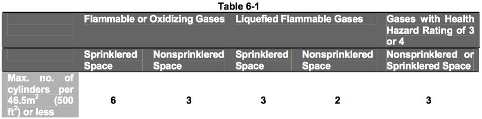
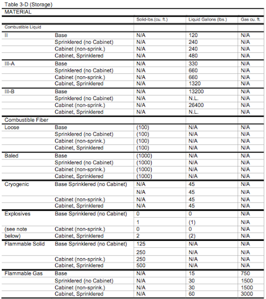
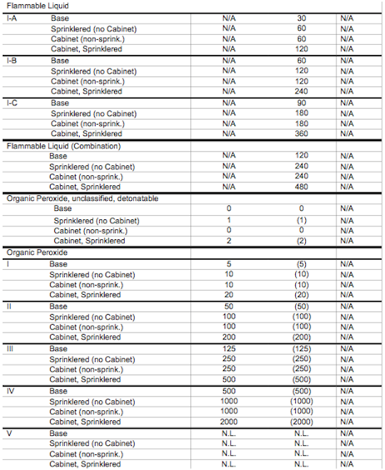
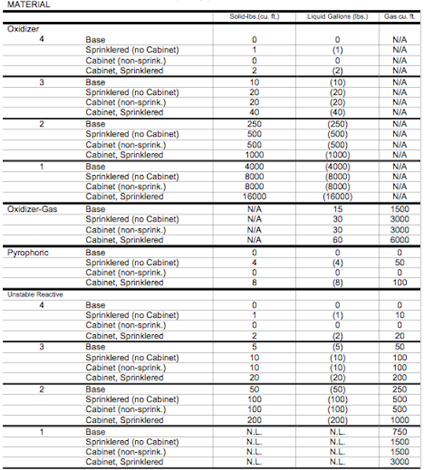
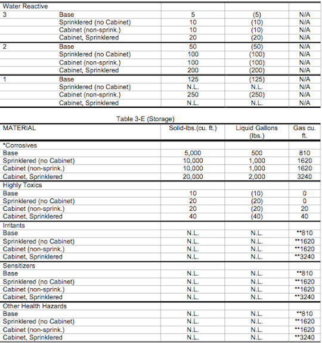
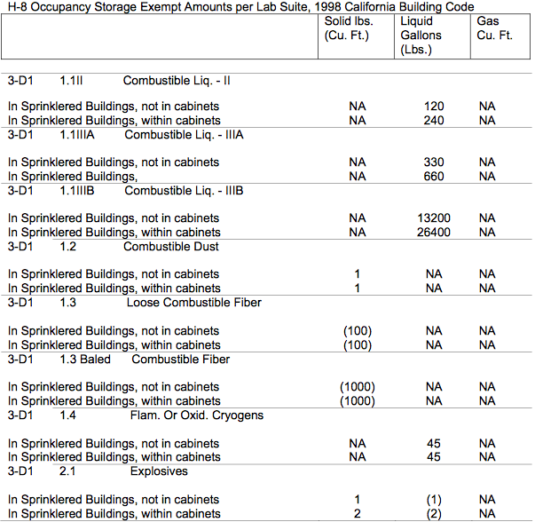
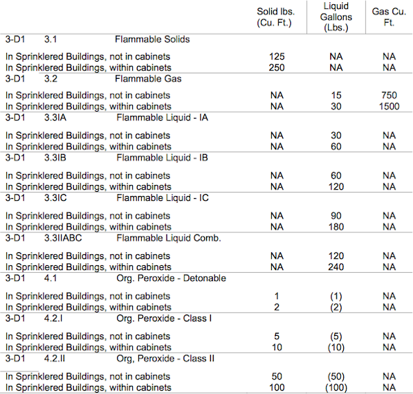
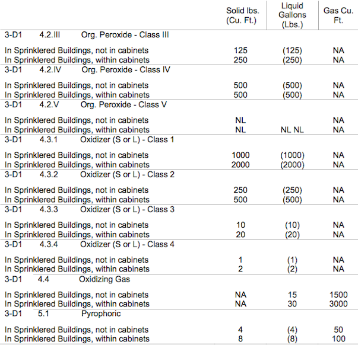
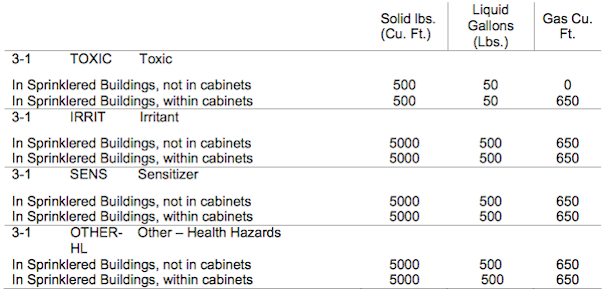

Last updated: June 5, 2023
Laboratory Standard & Design Guidelines
The Stanford Laboratory Standard & Design Guide is a resource document for use by faculty, staff, and design professionals during the planning and early design phases of a project. This Guide is to be used in conjunction with Stanford’s Facilities Design Guidelines and applies to construction projects for all Stanford University facilities, including leased properties.
The Stanford Laboratory Standard & Design Guide is not “all inclusive.” It does not cover all regulatory issues nor does it cover all design situations. It is important to note that use practices must be considered during the design process, as they can directly influence how the laboratory will be designed. In all cases, EH&S should be consulted on questions regarding health, safety, and the environment.
1Introduction
1.1Purpose
Stanford University has a continuing need to modernize and upgrade its facilities. The resulting construction projects often have significant health and safety requirements due to regulatory oversight. Since these requirements can impact the design of a project, Environmental Health and Safety (EH&S) prepared this EH&S Laboratory Design Guide to aid the campus community with planning and design issues. EH&S believes that the Guide, in conjunction with EH&S’s plan review and consultation, improves design efficiency and minimizes changes.
1.2Application
The Guide is a resource document for use by faculty, staff, and design professionals for use during the planning and early design phases of a project. The Guide applies to construction projects for all Stanford University facilities, including leased properties.
1.3Format of the Guide
The Guide is formatted to address laboratory design issues pertinent to General Laboratories (e.g., chemical laboratories) in Section 1, with additional requirements for Radioactive Materials Laboratories and Biosafety Level 2 Laboratories presented in Sections 2 and 3 respectively.
Within the sections, specific design criteria are provided. Comments are included under the specific design criterion to give the user the rational behind the design feature.
1.4References
References include regulations (e.g., Cal/OSHA and Fire Code), concensus standards (e.g., ANSI/ASHRAE), and good practices. Good practices stem from industry standards and/or the judgement/knowledge of Standard University’s EH&S professionals.
Design criteria are designated in the following ways:
Shall:
Criterion is mandated by applicable regulation(s).
- The user of the Guide is required to include the design feature.
Must:
Criterion is based on well-established consensus standards/guidelines. “Must” is used to reflect a Stanford requirement, although not required by a regulation.
- The user of the Guide is required to include the design feature.
Should:
Criterion is advisory in nature, based on good engineering and safety practices.
- It is left to the discretion of the user of the Guide to include the design feature.
1.5Limitations of the Guide
The EH&S Laboratory Design Guide is not “all inclusive.” It does not cover all regulatory issues nor does it cover all design situations. It is important to note that use practices must be considered during the design process, as they can directly influence how the laboratory will be designed (e.g., how hazardous materials are used impacts how they are stored, which is a design issue). In all cases, EH&S should be consulted on questions regarding health, safety, and environment.
1.6Acknowledgement
The majority of this document was adapted from the University of California Environmental Health and Safety Laboratory Safety Design Guide. Stanford University Environmental Health & Safety expresses great appreciation to University of California for all initial efforts put forth in its original development.
2General Requirements For Stanford University Laboratories
2.1Regulations, Standards and References
Regulations, Standards and References
Regulations:
- Federal Code of Regulations (CFR), Title 29, Labor
- California Code of Regulations (CCR), Title 8, Cal/OSHA Standards
- California Code of Regulations (CCR), Title 24, Part 9, Uniform Fire Code
- California Code of Regulations, Title 24, Part 2, California Building Code
- CDC Select Agents, Title 42, Chapter I, Part 72 – Interstate Shipment of Etiologic Agents
- National Fire Protection Association (NFPA) Handbook 70: National Electric Code
- California Radiation Control Regulations, Title 17
- Palo Alto Municipal Code, Title 16, Building Regulations
- County of Santa Clara Municipal Code Section B11, Chapters XIII and XIV, Hazardous Material and Toxic Gas Storage
Consensus Standards and References:
- American National Standard for Laboratory Ventilation (ANSI/AIHA Z9.5-2012)
- American National Standard for Thermal Environmental Conditions for Human Occupancy (ANSI/ASHRAE 55-1992)
- State of California, Department of Health Services, Radiologic Health Branch,
- Guide for the Preparation of Applications for Medical Programs (RH 2010 4/90) (not formally adopted)
- “Safe Handling of Radioactive Materials”, National Council on Radiation Protection (NBS Handbook 92)
- “Safe Handling of Radionuclides”, International Atomic Energy Agency, Safety Series No. 1, (1973 ed. is still current as of 1999) (IAEA)
- CDC-NIH Biosafety in Microbiological and Biomedical Laboratories, 5th Edition
- National Institutes of Health Design Requirements Manual, December 12, 2016
- National Research Council (2011) Prudent Practices in the Laboratory
2.2Scope
The primary objective in laboratory design is to provide a safe environment for laboratory personnel to conduct their work. A secondary objective is to allow for the maximum flexibility for safe research use. Undergraduate teaching laboratories require other specific design considerations. Therefore, all health and safety hazards must be anticipated and carefully evaluated so that protective measures can be incorporated into the design. No matter how well designed a laboratory is, improper usage of its facilities will always defeat the engineered safety features. Proper education of the facility users is essential.
The General Requirements listed in this section illustrate some of the basic health and safety elements to include in all new and remodeled laboratories at Stanford. Variations from these guidelines need approval from SU Environmental Health and Safety (EH&S). The subsections of Section 1.0 provide specific guidance on additional critical features of a general laboratory (e.g., fume hoods, hazardous materials storage, and compressed gases.)
2.3Building Requirements
1. Designer Qualifications- The designer must have the appropriate professional license in his/her area of expertise.
Good Practice
2. Building Occupancy Classification- Occupancy classification is to be based upon an assessment of a projected chemical inventory of the building. Prior to the final design, the campus fire safety organization will need to assign an occupancy class to ensure compliance with the building codes.
24 CCR, Part 2 (California Building Code)
24 CCR, Part 9 (California Fire Code)
3. Environmental Permits- Project managers must consult with SU EH&S to identify permitting and pollution abatement engineering requirements for the building. This should be done well before key resource allocation decisions are made.
2.4Building Design Issues
Because the handling and storage of hazardous materials inherently carries a higher risk of exposure and injury, it is important to segregate laboratory and non-laboratory activities. In an academic setting, the potential for students to need access to laboratory personnel, such as instructors and assistants, is great. A greater degree of safety will result when nonlaboratory work and interaction is conducted in a space separated from the laboratory.
1. Special consideration should be given to the choice of fireproof construction for the buildings. The selection of the site shall be such to minimize the risk of landslide or flood damage.
Safe Handling of Radionuclides 1973 Edition Section 3.3.1
Good practice per Stanford University EH&S
2. An automatically triggered main gas shutoff valve for the building shall be provided for use in a seismic event. In addition, interior manual shutoff valves shall be provided for both research and teaching areas.
Good Practice per Stanford University EH&S
3. Large sections of glass shall be shatter resistant.
Good Practice per Stanford University EH&S
In the event of a severe earthquake, as the glass in cabinets and windows breaks, the shards need to be retained to prevent injury.
4. Offices and write-up desks for laboratory personnel should be located outside of the laboratory space. Locating the office zones very close to the laboratory, preferably within the line of sight achieved via the use of glass walls or walls with viewing windows, will provide easy access, visibility, and communication.
- Locating offices and write-up desks outside the laboratory environment allows for a safer workspace where food can be consumed, quiet work can be done, and more paper and books can be stored.
Where it is necessary to have offices or write-up desks within research areas, there must be adequate separation between the laboratory area and the office areas.
- Adequate separation can be achieved through a combination of distance and/or physical barriers (e.g., partitions or walls), such that Personal Protective Equipment (PPE) is not required while sitting at desks. Different flooring between the office and laboratory zones is desirable, as it can provide a visual cue between the office/write- up desk area of the lab and the area where hazardous materials are used and stored.
- When write-up desks are located within the laboratory, they must be at the entrance of the laboratory, with the wet lab benches, fume hoods, biosafety cabinets, and equipment using or storing chemicals, biological materials, and radioactive materials located on the opposite side of the laboratory; this allows laboratory personnel and visitors to enter the laboratory without traveling through the hazardous materials zone of the lab.
It is important to segregate laboratory and non-laboratory activities because (1) the handling and storage of hazardous materials inherently carries a higher risk of exposure and injury; (2) the egress path from a lab desk to an exit should not require movement through a more hazardous zone; and (3) it is prohibited to store, consume food, apply make-up or chew gum in areas where hazardous materials are used and/or stored.
National Research Council, Prudent Practices in the Laboratory, Chapter 9.B (2011)
DiBerardinis, Louis, et al. Guidelines for Laboratory Design, Chapter 2.1.1.4 (2013)
National Institutes of Health Design Requirements Manual (December 12, 2016) Sections 2.1.3.5, 2.2.4.1
Cal/OSHA Standard 5191, Appendix A, Occupational Exposure to Hazardous Chemicals in Laboratories
California Radioactive Material License, 0676-43
2.5Laboratory Design Considerations
Walls/Doors/Security
1. The laboratory shall be completely separated from outside areas (i.e., must be bound by four walls).
California Radiation Control Regulations, Title 17
State of California, Department of Health Services, Radiologic Health Branch
Guide for the Preparation of Applications for Medical Programs (RH 2010 4/90)
Having enclosed laboratories will help contain spills, keep unauthorized personnel from entering areas where hazardous operations are performed, etc. These regulations apply specifically to laboratories containing radioactive materials; however, Stanford University EH&S interprets this to include all laboratories (e.g., general chemistry and electronics).
2. The laboratory shall have means of securing specifically regulated materials such as DEA (Drug Enforcement Administration) controlled substances and CDC (Centers for Disease Control) select agents and radioactive materials (i.e., lockable doors, lockable cabinets, etc.).
CDC Select Agents
Controlled Substances Act, Section 803
California Radiation Control Regulations, Title 17
State of California, Department of Health Services, Radiologic Health Branch,
Guide for the Preparation of Applications for Medical Programs (RH 2010 4/90)
Having secured hazardous materials storage will keep unauthorized personnel from gaining access to them. These regulations apply specifically to laboratories containing radioactive materials and CDC Select Agents; however, Stanford University EH&S interprets this to include all laboratories (e.g., general chemistry and electronics).
Windows
3. If the laboratory has windows that open, they must be fitted with insect screens.
CDC-NIH Biosafety in Microbiological and Biomedical Laboratories (BSL 2, D.5)
Guidelines for Research Involving Recombinant DNA Molecules (NIH Guidelines) Appendix Physical Containment-II-B-4-e: Physical Containment/Laboratory Facilities (BL2)
Insects, particularly flies, are known to be a potential carrier of disease. To keep insects out of the lab, the doors must be closed while an experiment is in progress, and windows shall be screened if they are capable of being opened. These references apply specifically to laboratories containing biological materials; however, Stanford University EH&S interprets this to include all laboratories (e.g., general chemistry and electronics).
Flooring
4. The floor must be non-pervious, one piece, and with covings to the wall. This can be achieved by use of glue, heat welded vinyl flooring, epoxy coated concrete slab, etc.
NBS Handbook 92
IAEA, Safe Handling of Radionuclides
Guide for the Preparation of Applications for Medical Programs (RH 2010 4/90)
Floors should be coved up walls and cabinets to ensure spills cannot penetrate underneath floors/cabinets. Tiles and wooden planks are not appropriate because liquids can seep through the small gaps between them. These references apply specifically to laboratories containing biological and radioactive materials; however, Stanford University EH&S interprets this to include all laboratories (e.g., general chemistry, electronics, etc.).
5. Floors in storage areas for corrosive liquids shall be of liquid tight construction.
CCR, Title 24, Part 9, Sections 8003.1.7.2, 8003.14.1.2
Sinks
6. Each laboratory must contain a sink for handwashing.
CDC-NIH Biosafety in Microbiological and Biomedical Laboratories (BSL 2, D.1)
Guidelines for Research Involving Recombinant DNA Molecules (NIH Guidelines) Appendix Physical Containment-II-B-4-d: Physical Containment/Laboratory Facilities (BL2)
NBS Handbook 92
IAEA, Safe Handling of Radionuclides
Exposure to hazardous materials and/or pathogenic organisms can occur by hand-to-mouth transmission. It is extremely important that hands are washed prior to leaving the laboratory. For this very reason, the sink should be located close to the egress. These references apply specifically to laboratories containing biological and radioactive materials; however, Stanford University EH&S interprets this to include all laboratories (e.g., general chemistry and electronics).
7. Laboratory sinks shall have lips that protect sink drains from spills.
P.A. Ordinance. 16.09.032(b)(13)
Sink lips or berms should be >= 0.25 inches and designed to completely separate the lab bench or fume hood work area from the sink drain.
Chemical/Waste Storage
8. Chemical storage shelves shall not be placed above laboratory sinks.
P.A. Ordinance, 16.09.091
9. Sufficient space or facilities (e.g., storage cabinets with partitions) shall be provided so that incompatible chemicals/gases (waste and non-waste) can be physically separated and stored. This will be based on the chemical inventory and use projection provided by the Principal Investigator to the project and EH&S. If the project scope cannot provide sufficient storage the user must develop a written management control plan to include as part of their local Chemical Hygiene Plan.
Good Practice per Stanford University EH&S
CCR, Title 24, Part 9, Section 8001.9.8
Materials which in combination with other substances may cause a fire or explosion, or may liberate a flammable or poisonous gas, must be kept separate. When designing the shelves, it is important to factor in enough space for secondary containers. Recommend that solvent storage not be located under the laboratory fume hood, as this is a location where fires are most likely to occur in laboratories.
All labs should be designed to conveniently and safely accommodate the temporary storage of biological, radiological, and chemicals (non-waste and waste) based on laboratory use projections. Wastes are generally stored in the lab in which they are generated, not in centralized accumulation areas.
Furniture Design, Location, and Exit Paths
10. All furniture must be sturdy. All work surfaces (e.g., bench tops and counters) must be impervious to the chemicals used. The counter top should incorporate a lip to help prevent run-off onto the floor.
NBS Handbook 92
IAEA, Safe Handling of Radionuclides
Guide for the Preparation of Applications for Medical Programs (RH 2010 4/90)
CDC-NIH Biosafety in Microbiological and Biomedical Laboratories (BSL 2, D.3)
Guidelines for Research Involving Recombinant DNA Molecules (NIH Guidelines) Physical Containment-II-B-4-b : Physical Containment/Laboratory Facilities (BL2)
For example, many microbiological manipulations involve concurrent use of chemical solvents such as formaldehyde, phenol, and ethanol as well as corrosives. The lab bench must be resistant to the chemical actions of these substances and disinfectants. Wooden bench tops are not appropriate because an unfinished wood surface can absorb liquids. Also, wood burns rapidly in the event of a fire. Fiberglass is inappropriate since it can degrade when strong disinfectants are applied. Fiberglass also releases toxic smoke when burned. These references apply specifically to laboratories containing biological and radioactive materials; however, Stanford University EH&S interprets this to include all laboratories (e.g., general chemistry and electronics).
11. Vented cabinets with electrical receptacles and sound insulation should be provided for the placement of individual vacuum pumps where their use is anticipated. A one- to two-inch hole for the vacuum line hose from the cabinet to the bench top should be provided.
Good Practice
12. The lab shall have a minimum aisle clearance of at least 24 inches. Main aisles used for emergency egress must have a clearance width of at least 36 inches.
CCR Title 8, 3272(b)
NFPA 45, Standard on Fire Protection for Laboratories
Clear aisles and exits are necessary to facilitate departure in the event of an emergency. In practice, lab aisles must be designed wider than 24” so that even with the presence of lab stools and other miscellaneous items, a clearance of 24” is always maintained.
13. A pathway clearance of 36 inches must be maintained at the face of the access/exit door.
Good Practice per Stanford University EH&S
Lab benches must not impede emergency access to an exit. This is also applicable to placement of other furniture and appliances such as chairs, stools, refrigerators, etc.
14. Designated storage space should be provided for lab carts. Location must not reduce width of corridors or aisles to less than code-required widths. Lab carts should be secured with earthquake restraints when not in use.
Good practice per Stanford University EH&S. see also information on “Earthquake Restraints” below.
15. Furniture design must comply with basic ergonomic specifications referenced in the SU Facilities Design and Construction Standards (Section 01310, Part A – 1.04)
Good Practice
Lack of properly designed workstations can increase safety and ergonomic risks for occupants.
16. Laboratory shelving should NOT be installed at heights and distances which require workers to reach 30 centimeters above shoulder height and extend arms greater than 30 centimeters while holding objects 16 kg or less when standing on the floor or on a 12” step stool.
ACGIH Threshold Limit Values for Chemicals Substances and Physical Agents & Biological Agents
Good practice per Stanford University EH&S.
Installation of high shelving, above laboratory benches in particular, can create several potential hazards, including, but not limited to ergonomic issues (over reaching above shoulders and across lab benches); spill and exposures to chemical, radiological or biological agents (e.g., dropping containers when accessing them at high levels). If high shelving were installed, administrative controls, which are often burdensome, would be required. A system for ensuring safe access would include prohibition on the materials stored on shelves, limitations on the frequency of use, availability of ladders or ladders stands, training on ladders, etc. (See also #15 and “Earthquake Restraint” information below.)
17. The space between adjacent workstations and laboratory benches should be 5 ft. or greater to provide ease of access. In a teaching laboratory, the desired spacing is 6 ft. Bench spacing shall be considered and included in specifications and plans.
Americans with Disabilities Act of 1990 (ADA)
Title I, “Employment,” Sec. 101, “Definitions,” 42 USC 12111 9(A)
Title III, “Public Accommodations and Services Operated by Private Entities,” Sec. 303, New Construction and
Alterations in Public Accommodations and Commercial Facilities,” 42 USC 12183.
NFPA 45, Chapters 2 and 3
18. The laboratory doors shall be automatically self-closing. Such self-closing doors are to be able to be opened with a minimum of effort as to allow access and egress for physically challenged individuals.
24 CCR, Part 2, Chap. 10
24 CCR, Part 9 1007.4.4
Americans with Disabilities Act of 1990 (ADA)
Title III, “Public Accommodations and Services Operated by Private Entities,” Sec. 303, New Construction and
Alterations in Public Accommodations and Commercial Facilities,” Pt. 36, Appendix A
Prudent Practices in the Laboratory, 5.C
19. Doors in H-occupancy laboratories shall have doors which swing in the direction of egress. Doors serving B-occupancy shall swing in the direction of egress if the occupant load is 50 or more. Where possible, all B-occupancy lab doors should swing out.
1997 California Building Code
Doors which swing in the direction of egress will facilitate occupant departures from laboratories during emergencies.
20. Sufficient space or facilities must be provided for the storage, donning and doffing of personal protective equipment used in the laboratory.
National Institutes of Health Design Requirements Manual (December 12, 2016) Section 2.1.3.5
Good practice per Stanford University EH&S
Facilities such as hooks or cabinets for lab coats, containers for safety eyewear and/or hearing protection, must be provided so that personnel are able to don and doff the personal protective equipment (PPE) before entering and exiting the hazardous areas of the laboratory. PPE storage should be separate from any storage provided for ordinary clothing.
Illumination
21. Laboratory areas shall be provided adequate natural or artificial illumination to ensure sufficient visibility for operational safety.
NUREG 1556 Vol. 7 Appendix K
Safe Handling of Radionuclides, Section 3.3.5 (1973 ed.)
State of California, Department of Health Services, Radiologic Health Branch, Guide for the Preparation of
Applications for Medical Programs (RH 2010 4/90)
Title 8, 3317, Illumination
Earthquake Restraints
22. All equipment requiring anchoring shall be anchored, supported and braced to the building structure in accordance with CCR Title 24, Part 2, Table 16A-O. For example, any equipment, including but not limited to, appliances and shelving that are 48 inches or higher and have the potential for falling over during an earthquake, shall be permanently braced or anchored to the wall and/or floor.
California Code of Regulations (CCR), Title 24, Part 2, Table 16A-O, California Building Standards Commission (2007)
California Code of Regulations (CCR), Title 8, 3241, California Building Standards Commission (2007)
This practice keeps these items from falling in the event of an earthquake and assures that safety while exiting is not compromised.
23. A channeled anchoring station for seismic bracing of equipment, named the Universal Restraining Bar, shall be installed along all bench top/counters in laboratories and other horizontal surfaces that house equipment. These bars shall be installed at the back edge of the bench to minimize bench space used. Examples and guidance are provided on the ProtectSU website protectsu.stanford.edu. This system will allow a bracing point for all bench top equipment and will provide standard bracing locations for all benchtop equipment. This bar allows for bracing of items in a way that allows them to be moved to another location when needed, and re-braced after moving. The bar should be adhered to the benchtop with very high bond adhesive so that no holes are drilled.
ProtectSU, Stanford’s Seismic Mitigation Initiative, protectsu.stanford.edu
24. All shelves must have a passive restraining system to adequately prevent shelf contents from toppling over. Seismic shelf lips (3/4 inch or greater), sliding doors, or mesh nets are examples. The shelves themselves must be firmly fixed so they cannot be vibrated out of place and allow shelf contents to fall.
Prudent Practices in the Laboratory (2011 edition), 3.B.1.4 and 5.E.2
Good Practice per Stanford University EH&S
Installation of seismic lips on shelving areas will prevent stored items from falling during a seismic event. For bookshelves, friction matting may be substituted upon consultation with EH&S.
25. All equipment requiring anchoring, whether installed by a contractor or the University, shall be anchored, supported, and braced to the building structure in accordance with 24 CCR Part 2, Table 16A-O.
CCR, Title 24, Part 2 Table 16A-O
26. Cabinets must be equipped with positive locking door latches.
FEMA, Reducing the Risks of Nonstructural Earthquake Damage
Examples include barrel bolts, safety hasps, and child proof locks. These latches will not allow the cabinet door to open unless the locking mechanism is triggered. Magnetic or pinch grip catches are not considered “positive locking” and hence should not be used.
Cleanability
27. The laboratory shall be designed so that it can be easily cleaned. Bench tops must be a seamless one-piece design to prevent contamination. Laminate bench tops are not suitable. Penetrations for electrical, plumbing, and other considerations must be completely and permanently sealed. If the bench abuts a wall, it must be coved or have a backsplash against the wall. Walls should be painted with washable, hard non-porous paints.
CDC-NIH Biosafety in Microbiological and Biomedical Laboratories, (BSL 2, D.2)
Guidelines for Research Involving Recombinant DNA Molecules (NIH Guidelines) Appendix Physical Containment-II-B-4-a: Physical Containment/Laboratory Facilities (BL2)
NBS Handbook 92
IAEA, Safe Handling of Radionuclides
Wooden and wood finish walls or floors are not appropriate because they can absorb hazardous and/or potentially infectious material, particularly liquids, making decontamination/remediation virtually impossible. These references apply specifically to laboratories containing biological and radioactive materials; however, Stanford University EH&S interprets this to include all laboratories (e.g., general chemistry and electronics).
28. Spaces between benches, cabinets, and equipment must be accessible for cleaning and allow for servicing of equipment.
CDC-NIH Biosafety in Microbiological and Biomedical Laboratories (BSL 2, D.4)
Guidelines for Research Involving Recombinant DNA Molecules (NIH Guidelines) Appendix Physical Containment-II-B-4-c : Physical Containment/Laboratory Facilities (BL2)
Laboratory furniture must have smooth, non-porous surfaces so as to resist the absorption of liquids and the harsh effects of disinfectants. Furniture must not be positioned in such a manner that makes it difficult to clean spilled liquids or conduct routine maintenance. For example, positioning a Class II biosafety cabinet in a limited concave space might not allow the biosafety cabinet certifier to remove panels of the cabinet when recertifying the unit. These references apply specifically to laboratories containing biological and radioactive materials; however, Stanford University EH&S interprets this to include all laboratories (e.g., general chemistry and electronics).
Breakrooms
29. The design of the laboratory building must incorporate adequate additional facilities for food storage/consumption and personal hygiene tasks.
California Radioactive Material License, 0676-43
State of California, Department of Health Services, Radiologic Health Branch – DOHS 2010
Stanford University Radiation Safety Manual
Per 8 CCR 3368(b), 5193(d)(2), the storage and consumption of food, application of cosmetics or lip balm, or handling of contact lens in areas they may be contaminated by any toxic material or bloodborne pathogen is prohibited.
2.6Mechanical Considerations
Electrical
30. Shall provide GFI protection to electrical receptacles above counter tops and within 6 feet of sinks. Receptacles that are not readily accessible or receptacles for appliances occupying dedicated space, which are cord-and-plug connected in accordance with NEC Section 400-7A(6-8), are exempted.
NFPA 70, Chapter 2, 210-8
31. The lab should be fitted with an adequate number of electrical outlets, which can accommodate electrical current requirements with an additional 20-40% capacity.
Good Practice per Stanford University
The lab may have several pieces of equipment, which require large amounts of electrical current. Such items include freezers, biosafety cabinets, centrifuges, and incubators. The room design must take into consideration concerns such as electrical demand prior to occupancy to avoid a potential power failure.
32. Circuit breakers should be located outside the lab, but not in rated corridors.
Good Practice per Stanford University EH&S
In the event of an emergency, the laboratory may be unsafe to enter. Hence, the circuit breakers for key electrical appliances should be located outside the lab. ICBO recommends not putting electrical panels in rated corridors.
Plumbing
33. Auxiliary valves for gas and vacuum lines should be located outside the lab.
Good Practice per Stanford University EH&S
In the event of an emergency, the laboratory may be unsafe to enter. Hence, the valves for gas and vacuum lines should be located outside the lab.
34. Flexible connections should be used for connecting gas and other plumbed utilities to any freestanding device, including but not limited to biosafety cabinets, incubators, and liquid nitrogen freezers. Flexible connections should be appropriate for the pressure requirements and should be constructed of material compatible with the transport gas. A shutoff valve should be located within sight of the connection and clearly marked.
Good Practice per Stanford University EH&S
Seismic activity may cause gas and other utility connections to break off. A flexible connection will minimize this potential considerably.
35. Sink drains traps shall be transparent (e.g., made of glass) and easy to inspect or have drain plugs to facilitate mercury spill control.
P.A. Ordinance, 16.09.032(b)(14)
If mercury-containing products or compounds will not be used, an exemption may be requested in writing to; Stanford University Environmental Quality Manager, Stanford Utilities Department, Mail Code 7270.
36. Lab waste water lines shall be separate from domestic sewage, and a sampling point shall be installed in an easily accessible location outside the building.
P.A. Ordinance, 16.09.060
The sampling point shall be installed at a location where all building lab wastes are discharged, before the lab waste line connects to the domestic waste line. The sampling point shall be designed so that it is perpendicular to the lab waste line, has a minimum 4 inch diameter, has a cleanout screw on cap and is protected by a christie box. The sampling point should not be located in an area where water from irrigation or flow from stormwater runoff can accumulate.
3Ventilation
3.1Regulations, Standards and References
Regulations:
- California Code of Regulations (CCR), Title 8, Section 5154.1, Ventilation requirements for laboratory type hood operations
- California Code of Regulations, Title 8, Section 5209, Carcinogens
- Carcinogens Code of Federal Regulation (CFR) 10, Parts 20 and 35
- National Fire Protection Association (NFPA) Handbook 45, Standard on Fire Protection for Laboratories Using Chemicals
- National Fire Protection Association (NFPA) Handbook 99 Standard for Health Care Facilities
Consensus Standards and References:
- American National Standards Institute (ANSI), Z358.1 Emergency Eyewash and Shower Equipment
- American National Standard for Laboratory Ventilation (ANSI/AIHA Z9.5)
- American National Standard for Thermal Environmental Conditions for Human Occupancy (ANSI/ASHRAE 55-1992)
- The CalDAG – California Disabled Accessibility Guidebook
- Guide for the Preparation of Applications for Medical Programs (RH 2010 4/90) (not formally adopted) (DOHS 2010)
- “CRC Handbook of Laboratory Safety, 4th Ed.” CRC Press 1995.
- “Safe Handling of Radionuclides”, International Atomic Energy Agency, Safety Series No. 1, (1973 ed. is still current as of 1999) (IAEA)
3.2Scope
The requirements of this Guide applies to all Stanford laboratory buildings, laboratory units, and laboratory work areas in which hazardous materials are used, handled, or stored.
3.3General Ventilation Considerations
1. The room should have mechanically generated supply air and exhaust air. All lab rooms shall use 100% outside air and exhaust to the outside. There shall be no return of fume hood and laboratory exhaust back into the building.
Good Practice per Stanford University EH&S
Prudent Practices in the Laboratory 8.C, 8.D
CCR, Title 24, Part 3, Section 505.3
NFPA 45, Chapter 6-4.1
ANSI/AIHA Z9.5, 4.10.3
The air balance of the room cannot be adjusted unless there is mechanically generated supply and exhaust air.
2. Mechanical climate control should be provided.
Good Practice per Stanford University EH&S
- Per ASHRAE 55-1992, comfortable temperature range are defined as follows: Winter: 69-76 °F (at 35% RH); Summer: 73-79 °F (at 60% RH)
- Electrical appliances often exhaust heat into a room (e.g., REVCO freezer, incubator, and autoclave). Failure to take this effect into consideration may result in an artificially warm working environment. Windows must not be opened for a cooling effect since the room air balance will be altered. A cool room must not be heated with a portable heater that may be a fire hazard.
3. Cabinetry or other structures or equipment must not block or reduce effectiveness of supply or exhaust air.
Good Practice per Stanford University EH&S
Many supply diffusers and room exhaust room outlets are located along laboratory walls. Storage of boxes near these openings may obstruct the circulation of air and supply or exhaust air functioning.
4. Ventilation Rates
- General laboratories using hazardous materials shall have a minimum of 6 air changes per hour (ACH). Exhaust ventilation shall be continuous.
2013 CMC section 403.7, Table 403.7
2013 California Fire Code 5004.3
2015 ASHRAE Handbook—HVAC Applications, Chapter 16
The Fire Code requires exhaust ventilation at 1 cfm/ft2 of floor area for dispensing, use, and storage of hazardous materials in buildings operating above the maximum allowable quantity (MAQ). In a room with a 10 ft. ceiling, this equates to 6 ACH. The Mechanical Code requires a minimum exhaust ventilation rate of 1 cfm/ft2 for Educational Science Laboratories.
- Upon consultation with EH&S, some labs may be candidates for reduced airflow changes (from 6 ACH to 4 ACH) when unoccupied during nonbusiness hours.
- Many laboratory buildings now have laser rooms and rooms with analytic tools that do not require hazardous materials. Such rooms have been permitted with 3 to 4 ACH. Careful consideration should be given to not only current, but also future use of the laboratory as research needs change. Without adequate exhaust ventilation, future use of hazardous materials in the space will be restricted or require potentially costly retrofitting.
5. Laboratories must be maintained under negative pressure in relation to the corridor or other less hazardous areas. Clean rooms requiring positive pressure should have entry vestibules provided with door-closing mechanisms so that both doors are not open at the same time. Consult with SU Fire Marshal for design details.
ANSI/AIHA Z9.5 – 1992, 4.11.4-4.11.5
As a general rule, airflow should be from areas of low hazard, unless the laboratory is used as a clean or sterile room.
6. Where appropriate, general ventilation systems should be designed, such that, in the event of an accident, they can be shut down and isolated to contain radioactivity.
Good Practice per Stanford University
7. The air velocity volume in each duct should be sufficient to prevent condensation or liquid or condensable solids on the walls of the ducts.
Good Practice per Stanford University
The ACGIH Industrial Ventilation handbook (22nd edition) recommends a velocity of 1000- 2000 fpm.
8. Fume hoods should not be the sole means of room air exhaust. General room exhaust outlets shall be provided where necessary to maintain minimum air change rates and temperature control.
Good Practice per Stanford University
9. Operable windows should be prohibited in new lab buildings and should not be used on modifications to existing buildings.
Good Practice per Stanford University
10. Local exhaust ventilation (e.g., “snorkels” or “elephant trunks”), other than fume hoods, shall be designed to adequately control exposures to hazardous chemicals. An exhausted manifold or manifolds with connections to local exhaust may be provided as needed to collect potentially hazardous exhausts from gas chromatographs, vacuum pumps, excimer lasers, or other equipment which can produce potentially hazardous air pollutants. The contaminant source needs to be enclosed as much as possible, consistent with operational needs, to maximize control effectiveness and minimize air handling difficulties and costs.
ACGIH, Industrial Ventilation: A Manual of Recommended Practice, 23rd edition, or latest edition
Enclosure minimizes the volume of airflow needed to attain any desired degree of containment control. This reduces fan size, motor horsepower, make up air volume, and make up air conditioning costs.
11. Hoods should be labeled to show which fan or ventilation system they are connected to.
Good Practice per Stanford University
12. No laboratory ventilation system ductwork shall be internally insulated. Sounds baffles or external acoustical insulation at the source should be used for noise control.
Good Practice per Stanford University
Fiberglass duct liner deteriorates with aging and sheds into the space resulting in IAQ complaints, adverse health effects, maintenance problems and significant economical impact. Glass wool and refractory ceramic fibers are now rated as possible carcinogens by the National Toxicology program.
13. Air exhausted from laboratory work areas shall not pass unducted through other areas.
NFPA 45, Chapter 6-4.3
3.4Negative Pressurization
1. Airflow shall be from low hazard to high hazard areas.
Good Practice
CDC-NIH Biosafety in Microbiological and Biomedical Laboratories
Prudent Practices in the Laboratory 8.C, 8.D
NFPA 45,6.4.4
Anterooms may be necessary for certain applications, such as clean rooms or tissue culture rooms. Potentially harmful aerosols can escape from the containment of the laboratory room unless the room air pressure is negative to adjacent non-laboratory areas.
It is recommended that laboratories should contain a fully integrated laboratory control system to control the temperature, ventilation rate and room pressurization. The control system should constantly monitor the amount of supply and exhaust air for the laboratory rooms and regulate the flow to maintain a net negative pressurization.
2. An adequate supply of make up air (90% of exhaust) should be provided to the lab.
Good Practice per Stanford University
3. An air lock or vestibule may be necessary in certain high-hazard laboratories to minimize the volume of supply air required for negative pressurization control. These doors should be provided with interlocks so that both doors cannot open at the same time.
Good Practice per Stanford University
4. A corridor should not be used as a plenum.
Good Practice per Stanford University
3.5Supply Air Arrangements
1. Room air currents at the fume hood should not exceed 20% of the average face velocity to ensure fume hood containment.
Prudent Practices in the Laboratory 8.C
Good Practice per Stanford University
ANSI Z9.5-2003
Z9.5-2003 allows air velocities up to 50 fpm, but lower room air velocities around hoods cause less interference with the operation of the hood. Make up air should be injected at low velocity through an opening with large dimensions to avoid creating jets of airflow. An alternative is to direct air towards a ceiling that will allow the air velocity to decrease by the time it approaches a hood.
2. Make-up air should be introduced at opposite end of the laboratory room from the fume hood(s) and flow paths for room HVAC systems shall be kept away from hood locations, to the extent practical.
NFPA 99, Chapter 5-4.3.2
NFPA 45, Chapter 6-3.4 and 6-9.1
NIH Design Policy and Guidelines, Research Laboratory, 1996, D.7.7
ANSI Z9.5-2003
Air turbulence defeats the capability of hoods to contain and exhaust contaminated air.
3. Make-up air shall be introduced in such a way that negative pressurization is maintained in all laboratory spaces and does not create a disruptive air pattern.
Good Practice per Stanford University
4. Cabinetry or other structures or equipment should not block or reduce effectiveness of supply or exhaust air.
Good Practice per Stanford University
5. Supply system air should meet the technical requirements of the laboratory work and the requirements of the latest version of ASHRAE, Standard 62, Ventilation for Acceptable Indoor Air Quality.
Good Practice per Stanford University
3.6Fume Hood Location
1. Fume hoods should be located away from activities or facilities, which produce air currents or turbulence. Locate away from high traffic areas, air supply diffusers, doors, and operable windows.
NFPA 99, Chapter 5-4.3.2
NFPA 45, Chapter 6-3.4 and 6-9.1
Air turbulence affects the capability of hoods to exhaust contaminated air. Eddies are created by people passing by and by other sources of air currents.
2. Fume hoods should not be located adjacent to a single means of access to an exit. Recommend that hoods be located more than 10 feet from any door or doorway.
NFPA 45, Chapter 6-9.2
NFPA 45, Chapter 3-4.1(d)
NFPA 99, Chapter 5-4.3.2
ANSI/AIHA Z9.5, 5.4
A fire hazard or chemical release incident, both of which may start in a fume hood, can block an exit rendering it impassable. A fire or explosion in a fume hood located adjacent to a path of egress could trap someone in the lab.
3. Fume hood openings should not be located opposite workstations where personnel will spend much of their working day, such as desks or microscope benches.
NFPA 45, Chapter 6-9.3
Materials splattered or forced out of a hood could injure a person seated across from the hood.
4. An emergency eyewash/shower station shall be within 10 seconds of each fume hood.
CCR, Title 8, Section 5162
ANSI Z358.1
Per 8 CCR 5162, the requirement for an eyewash/shower is triggered when an employee may be exposed to substances, which are “corrosive or severely irritating to the skin or which are toxic by skin absorption” during normal operations or foreseeable emergencies. Fume hoods are assumed to contain such substances; hence, Stanford interprets this regulation to mean that emergency eyewash/shower station shall be within 10 seconds of fume hoods.
5. An ADA emergency eyewash/shower shall be within 10 seconds of an ADA fume hood (minimally one ADA hood per laboratory floor).
The CalDAG – California Disabled Accessibility Guidebook
The location of at least one ADA hood per floor will enable disabled individuals to conduct their research without having to transport chemicals, etc. in elevators.
3.7Approved Equipment
1. All fume hoods shall meet the requirements of CCR, Title 8, Sections 5141.1, 5209, and 5143 in addition to NFPA 45, Standard on Fire Protection For Laboratories Using Chemicals.
3.8Fume Hood and Local Exhaust Ventilation Selection/Types
1. General: Factors to consider when selecting a fume hood:
- Room size (length x width x height)
- Number of room air changes
- Lab heat load
- Types of materials used
- Linear feet of hood needed based on
- number of users/hood
- frequency of use
- % of time working at hood
- size of apparatus to be used in hood, etc.
A facility designed for intensive chemical use should have at least 2.5 linear feet of hood space per student.
Good Practice per Stanford EH&S
Evaluating the operational and research needs of the users will ensure that the appropriate type and number of hoods are integrated into the laboratory.
2. Constant Volume Hoods
These hoods permit a stable air balance between the ventilation systems and exhaust by incorporating a bypass feature. If bypass is 100% this allows a constant volume of air to be exhausted through the hood regardless of sash position.
3. Variable Air Volume (VAV) fume hoods
These hoods maintain constant face velocities by varying exhaust volumes in response to changes in sash position. Because only the amount of air needed to maintain the specified face velocity is pulled from the room, significant energy savings are possible when the sash is closed. However, since these hoods cost more than up front and more maintenance, effective sash management (e.g., pull sash closed when not using hood) is necessary.
4. Supply or auxiliary air hoods
These hoods are not permitted, unless an exception is granted by EH&S.
Good Practice per Stanford University EH&S
It is very difficult to keep the air supply and exhaust of supply hoods properly balanced. In addition, the supply air is intemperate, causing discomfort for those working in the hot or cold air stream. As a result, the supply vent is often either shut or blocked off, which eliminates any potential benefit of this type of hood. Finally, the presence and movement of the user’s body in the stream of supply air creates turbulence that degrades the performance of the hood.
5. Ductless Fume Hoods: Portable, non-ducted fume hoods are generally not permitted; however, a portable hood may be used for limited applications (e.g., used inside of an existing hood for a special application, such as odor control). Such applications must be reviewed and approved by EH&S on a case-by-case basis.
ANSI/AIHA Z9.5, 5.16
Portable hoods often do not meet the regulatory airflow requirements. Filters used with these units must be changed frequently and vary in filtration effectiveness from chemical to chemical. Experience has demonstrated that an OSHA compliance officer may require quarterly monitoring of hood exhaust to demonstrate the effectiveness of the filtration in the given application and the corresponding protection of the workers occupying the space. These hoods are often misused.
6. Perchloric/Hot Acid Hoods:
a) Heated perchloric acid shall only be used in a laboratory hood specifically designed for its use and identified as “For Perchloric Acid Operations.” (Exception: Hoods not specifically designed for use with perchloric acid shall be permitted to be used where the vapors are trapped and scrubbed before they are released into the hood.)
NFPA 45, Chapter 6-11.1
Heated perchloric acid will give off vapors that can condense and form explosive perchlorates. Limited quantities of perchloric acid vapor can be kept from condensing in laboratory exhaust systems by trapping or scrubbing the vapors at the point of origin.
b) Perchloric acid hoods and exhaust duct work shall be constructed of materials that are acid resistant, nonreactive, and impervious to perchloric acid.
8 CCR 5154.1(e)(7)
NFPA 45, Chapter 6-11.2
ANSI/AIHA Z9.5
c) The exhaust fan should be acid resistant and spark-resistant. The exhaust fan motor should not be located within the duct work. Drive belts should not be located within the duct work.
NFPA 45, Chapter 6-11.3
d) Ductwork for perchloric acid hoods and exhaust systems shall take the shortest and straightest path to the outside of the building and shall not be manifolded with other exhaust systems. Horizontal runs shall be as short as possible, with no sharp turns or bends. The duct work shall provide a positive drainage slope back into the hood. Duct shall consist of sealed sections. Flexible connectors shall not be used.
NFPA, Chapter 6-11.4
e) Sealants, gaskets, and lubricants used with perchloric acid hoods, duct work, and exhaust systems shall be acid resistant and nonreactive with perchloric acid.
NFPA 45, Chapter 6-11.5
ANSI/AIHA Z9.5
f) A water spray system shall be provided for washing down the hood interior behind the baffle and the entire exhaust system. The hood work surface shall be watertight with a minimum depression of 13 mm (1⁄2 inch) at the front and sides. An integral trough shall be provided at the rear of the hood to collect wash-down water.
8 CCR 5154.1(e)(7)
NFPA 45, Chapter 6-11.6
ANSI/AIHA Z9.5
Perchloric acid is a widely used reagent know to produce flammable or explosive reaction products; hence, the need to have wash down capabilities after each use to remove residues. A watertight surface will contain any chemical spills or leaks from leaking to underneath hood.
g) Spray wash-down nozzles shall be installed in the ducts no more than 5 ft. apart. The ductwork shall provide a positive drainage slope back into the hood. Ductwork shall consist of sealed sections, and no flexible connectors shall be used.
NFPA 45, Chapter 6-11.4
h) The hood surface should have an all-welded construction and have accessible rounded corners for cleaning ease.
Good Practice per Stanford University EH&S
Access for cleaning is an important design feature.
i) The hood baffle shall be removable for inspection and cleaning.
NFPA 45, Chapter 6-11.7
j) Each perchloric acid hood must have an individually designated duct and exhaust system.
ANSI/AIHA Z9.5
7. Radioactive Material Use
a) Laboratory hoods in which radioactive materials are handled shall be identified with the radiation hazard symbol.
NFPA, Chapter A-6-12.1
b) Fume hoods intended for use with radioactive isotopes must be constructed of stainless steel or other materials that will not be corroded by the chemicals used in the hood.
NCRP Report # 8
NFPA 99, Chapter 5-4.3.3
DOHS2010
CRC Handbook of Laboratory Safety, 4th Ed.
c) The interior of all radioisotope hoods must have coved corners to facilitate decontamination.
NFPA 99, Chapter 5-4.3.3
DOHS2010
CRC Handbook of Laboratory Safety, 4th Ed.
IAEA, Safe Handling of Radionuclides
Cracks and crevices are difficult to decontaminate.
d) The hood exhaust may require filtration by HEPA or Charcoal HEPA filters. Where such is the likelihood, the hood must have a bag-out plenum for mounting such filters and fan capacity for proper operation of the hood with the filter installed. The most appropriate location for the plenum is near the exhaust port of the fume hood (i.e., proximal to the hood).
NFPA 99, Chapter 5-4.3.3
DOHS2010
CRC Handbook of Laboratory Safety, 4th Ed.
IAEA, Safe Handling of Radionuclides
e) Hoods used for radioactivity should have sashes with horizontal sliding glass panels mounted in a vertical sash.
NFPA 99, Chapter 5-4.3.3
DOHS2010
10 CFR 20
CRC Handbook of Laboratory Safety, 4th Ed.
IAEA, Safe Handling of Radionuclides
f) The cabinet on which the hood is installed shall be adequate to support shielding for the radioactive materials to be used therein.
NFPA 99, Chapter 5-4.3.3
DOHS2010
10 CFR 20
CRC Handbook of Laboratory Safety, 4th Ed.
IAEA, Safe Handling of Radionuclides
g) In general, glove boxes with HEPA filtered exhausts shall be provided for operations involving unsealed radioactive material that emit alpha particles. Consult with the Radiation Safety Program for specific requirements.
NFPA 99, Chapter 5-4.3.3
DOHS2010
10 CFR 20
CRC Handbook of Laboratory Safety, 4th Ed.
IAEA, Safe Handling of Radionuclides
8. American with Disabilities Act (ADA) Hoods: Must consult with Stanford University’s ADA Compliance Office regarding the number lab hoods to install in facilities, which are accessible to and usable by individuals with disabilities – recommend minimally one ADA hood per laboratory floor. These hoods must provide appropriate worksurface heights, knee clearances, reach to controls, etc. to individuals in wheelchairs.
The CalDAG – California Disabled Accessibility Guidebook
The location of at least one ADA hood per floor will enable disabled individuals to conduct their research without having to transport chemicals, etc. in elevators.
9. Glove Boxes: Glove boxes (positive and negative) must meet the type, design and construction of requirements ANSI/AIHA Z9.5-1992, 5.14.
ANSI/AIHA Z9.5
10. Walk-in Fume Hoods: These hoods must meet the type, design and construction requirements of ANSI/AIHA Z9.5-1992, 5.13.
ANSI/AIHA Z9.5
11. Special Purpose Hoods: These hoods include enclosures for operations for which other types of hoods are not suitable (e.g., enclosures for analytical balances, histology processing machines, special mixing stations, evaporation racks). These hoods must be designed per ANSI Z9.2 and the Industrial Ventilation manual.
ANSI/AIHA Z9.5
Industrial Ventilation – A Manual of Recommended Practice (ACGIH)
3.9Fume Hood Labeling
1. Laboratory hoods and special local exhaust ventilation systems (SLEV) shall be labeled to indicate intended use (e.g., “Perchloric Acid Hood”).
NFPA 45, Chapter 6-12.1
2. A label must be affixed to each hood containing the following information from the last inspection:
a. certification date due
b. average face velocity
c. inspector’s initials
NFPA 45, Chapter 6-12.2 {NOTE: This code sites slightly different information for the label. Stanford determined it was appropriate to create a label with the above information.}
3.10Fume Hood Construction, Installation & Performance
1. New hoods can be mounted above a chemical storage cabinet, provided that the cabinet meets the Uniform Fire Code requirements for construction.
Good Practice per Stanford University EH&S
Recommend that solvent storage not be located under the laboratory fume hood, as this location is where fires are most likely to occur in laboratories.
2. Type 316 stainless steel should be used for all parts of the fume hood system ventilation duct as long as compatibility is maintained.
Good Practice per Stanford University EH&S
This material affords good, general corrosion, impact and vibration resistance.
3. Fume hood interior surfaces shall be constructed of corrosion resistant, non-porous, non-combustible materials such as type 316 stainless steel, and should be smooth and impermeable, with rounded corners. These materials shall have a flame spread index of 25 or less when tested in accordance with NFPA method 255, Standard Method of Test of Surface Burning Characteristics of Building Materials.
NFPA 45, Chapter 6-8.1.1, 6-11.2, 6-11.6
NFPA 99, 5-4.3.3
ANSI/AIHA Z9.5-1992, 5.12
Type 316 stainless steel (SS 316) is specified to avoid corrosion, thereby extending fume hood life. Splashes of liquid containing radioactive materials can be easily cleaned when hoods are constructed of non-porous materials such as stainless steel. Perchloric acid digestion over time may result in the condensation and consequential formation of perchlorate crystals, which in large quantities pose an explosion hazard, especially if combined with organic chemical condensate.
4. Hood inserts are only permitted for radioactive iodination procedures specifically approved by the Stanford Radiation Safety Officer.
5. Laboratory hoods shall be provided with a means of containing minor spills.
NFPA 45, Chapter 6-9.1.3
ANSI/AIHA Z9.5, 5.2
The means of containing minor spills might consist of a 6.4-mm (1⁄4 in.) recess in the work surface, use of pans or trays, or creation of a recess by installing a curb across the front of the hood and sealing the joints between the work surface and the sides, back, and curb of the hood.
6. There must be a horizontal bottom airfoil inlet at the front of the hood.
ANSI/AIHA Z9.5, 5.2
The air foil at the front of the hood floor assures a good sweep of air across the working surface toward the back of the hood. This minimizes the generation of turbulents or eddy currents at the entrance to the hood.
7. Adjustable baffles with horizontal slots must be present in the fume hood interior at the back and top.
ANSI/AIHA Z9.5, 5.2
Locating the slots in this manner will attain reasonably uniform face velocity under different conditions of hood use as related to heat sources, size, and configuration of equipment in hood.
8. Before a new fume hood is put into operation, an adequate supply of make up air must be provided to the lab.
Good Practice per Stanford University EH&S
A fume hood exhausts a substantial amount of air. For this reason, additional make up air must be brought into the room to maintain a proper air balance.
9. Face Velocity:
Laboratory fume hoods shall provide a minimum average effective face velocity of 100 feet per minute (fpm), with a minimum of 70 fpm at any point.
Ref: 8 CCR 5154.1(c)
10. Certification: See Stanford University’s laboratory fume hood performance and certification protocol at:
Fume Hood Testing and Performance Standards (LVMP Appendix 10.2.1)
11. Where the required velocity can be obtained by partly closing the sash, the sash and/or jamb shall be marked to show the maximum opening at which the hood face velocity will meet the requirements.
CCR, Title 8, Section 5154.1(e)(1)
12. An airflow indicator shall be provided and located so that it is visible from the front of the fume hood.
CCR, Title 8, Section 5154.1(e)(3)
NFPA 45, Chapter 6-8.7.1
ANSI/AIHA Z9.5-1992, 5.8
Follow manufacturer’s procedures for calibration of air flow indicator during installation. Follow manufacturer’s schedule for periodic calibration and maintenance parameters thereafter. Performance criteria for various airflow indicators are as follows:
o Kim Wipes: Shows inward flow.
o Magnahelic Gauges: Mark on gauge inches water read when average face velocity at 100 fpm.
o FPM Readout: Average readout is 100 fpm.
o Audio/Visual Alarms: Go into alarm mode if average face velocity drops to 80 fpm.
13. Baffles shall be constructed so that they may not be adjusted to restrict the volume of air exhausted through the laboratory hood.
NFPA 45, Chapter 6-8.1.2
14. Fans should run continuously without local control from hood location and independently of any time clocks.
Good Practice per Stanford University EH&S
If users have ability to shut off hoods or control their use with a time clock, there is a potential for users to conduct research in a hood that is not operating.
15. For new installations or modifications of existing installations, controls for laboratory hood services (eg., gas, air, and water) should be located external to the hood and within easy reach.
NFPA 45, Chapter 6-8.5.1
16. Shutoff valves for services, including gas, air, vacuum, and electricity shall be outside of the hood enclosure in a location where they will be readily accessible in the event of fire in the hood. The location of such a shut-off shall be legibly lettered in a related location on the exterior of the hood.
NFPA 99, Chapter 5-4.3.6
17. Laboratory hoods shall not have an on/off switch located in the laboratory. Exhaust fans shall run continuously without direct local control from laboratories.
Good Practice per Stanford University
18. Drying ovens shall not be placed under fume hoods.
Good Practice per Stanford University
3.11Fume Hood Power and Electrical
1. Chemical fume hood exhaust fans should be connected to an emergency power system in the event of a power failure.
Good Practice per Stanford University EH&S
This backup power source will ensure that chemicals continue to be exhausted. EH&S recognizes that it may not be practical to provide emergency power sufficient to maintain fume hood functioning at normal levels but recommends an emergency supply of at least half of the normal airflow.
2. Emergency power circuits should be available for fan service so that fans will automatically restart upon restoration after a power outage and supply at least half of the normal airflow.
Good Practice per Stanford University EH&S
Continual fan service will ensure that hazardous materials are exhausted continually.
3. Momentary or extended losses of power shall not change or affect any of the control system’s setpoints, calibration settings, or emergency status. After power returns, the system shall continue operation, exactly as before, without the need for any manual intervention. Alarms shall require manual reset, should they indicate a potentially hazardous condition.
4. Fume hood ventilating controls should be arranged so that shutting off the ventilation of one fume hood will not reduce the exhaust capacity or create an imbalance between exhaust and supply for any other hood connected to the same system.
NFPA 99, Chapter 5-4.3.4
5. In installations where services and controls are within the hood, additional electrical disconnects shall be located within 15m (50ft) of the hood and shall be accessible and clearly marked. (Exception: If electrical receptacles are located external to the hood, no additional electrical disconnect shall be required).
NFPA 45, Chapter 6-8.4.1
Locating services, controls, and electrical fixtures external to the hood minimizes the potential hazards of corrosion and arcing.
6. Hood lighting shall be provided by UL-listed fixtures external to the hood or, if located within the hood interior, the fixtures shall meet the requirements of NFPA 70, (National Electrical Code).
NFPA 45, Chapter 3-6
7. Light fixtures should be of the fluorescent type, and replaceable from outside the hood. Light fixtures must be displaced or covered by a transparent impact resistant vapor tight shield to prevent vapor contact.
Good Practice per Stanford University EH&S
Fluorescent bulbs radiate less heat than conventional bulbs while maintaining a safe and illuminated work area inside the hood.
8. The valves, electrical outlets and switches for utilities serving hoods should be placed at readily accessible locations outside the hood. All shutoff valves should be clearly labeled. Plumbing (e.g., vacuum lines) should exit the sides of the fume hood and not the bench top.
NFPA 45, Chapter 6-8.5.1
NFPA 99, Chapter 5-4.3.6 (Health Care)
Good Practice per Stanford University
3.12Sashes
1. Hoods shall have transparent movable sashes constructed of shatter-resistance, flame resistant material and capable of closing the entire front face.
ANSI/AIHA Z9.5-2003,
8 CCR 5154.1(c)
Good Practice per Stanford University
2. Vertical-rising sashes are preferred. If horizontal sashes are used, sash panels (horizontal sliding) must be 12 to 14 inches in width.
Good Practice per Stanford University
Sashes may offer extra protection to lab workers since they can be positioned to act as a shield.
3. A force of five pounds shall be sufficient to move vertically and/or horizontally moving doors and sashes.
ANSI/AIHA Z9.5-2003, 3.1.1
3.13Ducting
1. Hood exhausts should be manifolded together except for:
- Perchloric/hot acid hoods
- hoods with washdown equipment
- hoods that could deposit highly hazardous residues on the ductwork
- exhaust requiring HEPA filtration or other special air cleaning
- situations where the mixing of exhausted materials may result in a fire, explosion, or chemical reaction hazard in the duct system
Manifolded fume hood exhaust ducts shall be joined inside a fire rated shaft or mechanical room, or outside of the building at the roofline.
CCR, Title 8, Section 5143
NFPA 45
2. Horizontal ducts must slope at least 1 inch per 10 feet downward in direction of airflow to a suitable drain or sump.
ANSI/AIHA Z9.5-1992, 6.1
Liquid pools and residue buildup which can result from condensation may create a hazardous condition if allowed to collect.
3. Ducts exhausting air from fume hoods should be constructed entirely of non- combustible material. Gaskets should be resistant to degradation by the chemicals involved and fire resistant.
NFPA 45, Chapter 6-5.1
4. Automatic fire dampers shall not be used in laboratory hood exhaust systems. Fire detection and alarm systems shall not be interlocked to automatically shut down laboratory hood exhaust fans.
NFPA 45, Chapter 6-10
Fire dampers are not allowed in hood exhaust ducts. Normal or accidental closing of a damper may cause an explosion or impede the exhausting of toxic, flammable, or combustible materials in the event of a fire.
3.14Exhaust
1. New exhaust fans should be oriented in an up-blast orientation.
Good Practice per Stanford University EH&S
Any other type of fan orientation increases the fan work load and increases the risk of exhaust emission re-entrainment.
2. Hood exhaust stacks shall extend at least 7 feet above the roof. Discharge shall be directed vertically upward.
CCR, Title 8, Section 5154.1(e)(4)(D)
If parapet walls are present, EHS recommends that stacks extend at least 2 feet above the top of a parapet wall or at least 7 feet above the roof, whichever is greater.
Note: The University Architect/Planning Office must be contacted if any building feature, such as exhaust stacks, extend above the roofline.
3. Hood exhausts shall be located on the roof as far away from air intakes as possible to preclude re-circulation of laboratory hood emissions within a building. For toxic gas applications, the separation distance shall be at least 75 feet from any intake.
CCR, Title 8; Section 5154.1(e)(4)
SCCo Toxic Gas Ordinance No. NS-517.44
As future gas necessities are difficult to predict, EH&S recommends at least 75 feet for all applications.
4. Discharge from exhaust stacks must have a velocity of at least 3,000 fpm. Achieving this velocity should not be done by the installation of a cone type reducer. The duct may be reduced, but the duct beyond the reduction should be of sufficient length to allow the air movement to return to a linear pattern.
ANSI Z..95-2003, 5.3.5
Good Practice per Stanford University EH&S
Strobic-type exhaust fans may be used to address exhaust velocity needs.
5. Rain caps that divert the exhaust toward the roof are prohibited.
CCR, Title 8; Section 5154.1(e)(4)
6. Fume hood exhaust is not required to be treated (e.g., filtered or scrubbed) except…
when one of the following substances is used with a content greater than the percent specified by weight or volume:
CCR, Title 8, Section 5209(b)11
1,2-Dibromo-3-Chloropropane
Asbestos
Vinyl Chloride
Acrylonitrile
Inorganic Arsenic
Ethylene Dibromide
Ethylene Oxide
Methylene Chloride
Good Practice
or when used for radioisotope work. In this instance, the fume hood exhaust treatment system must be approved by the SU Radiation Safety Officer prior to installation and use.
7. Laboratory ventilation exhaust fans shall be spark-proof and constructed of materials or coated with corrosion resistant materials for the chemicals being transported. V-belt drives shall be conductive.
NFPA 45
8. Vibration isolators shall be used to mount fans. Flexible connection sections to ductwork, such as neoprene coated glass fiber cloth, shall be used between the fan and its intake duct when such material is compatible with hood chemical use factors.
Good Practice per Stanford University
9. Each exhaust fan assembly shall be individually matched (cfm, static pressure, brake horsepower, etc.) to each laboratory ventilation system.
Industrial Ventilation Manual
10. Exhaust fans shall be located outside the building at the point of final discharge. Each fan shall be the last element of the system so that the ductwork through the building is under negative pressure.
8 CCR 5154.1(e)(6)
ANSI/AIHA Z9.5,
An exhaust fan located other than at the final discharge point can pressurize the duct with contaminated air. Fume hood ducts must be maintained under negative pressure.
11. Fans shall be installed so they are readily accessible for maintenance and inspection without entering the plenum. If exhaust fans are located inside a penthouse, PPE needs for maintenance workers shall be considered.
NFPA 45
3.15Wind Engineering
1. Wind engineering evaluations should be conducted for all wind directions striking all walls of a building where fume hood exhaust is likely to have significant ground level impact, or is likely to affect air intake for the same nearby buildings.
Good Practice per Stanford University
2. Emergency generator exhaust should be considered in the wind engineering study.
Good Practice per Stanford University
3.16Noise
1. System design must provide for control of exhaust system noise (combination of fan-generated noise and air-generated noise) in the laboratory. Systems must be designed to achieve an acceptable Sound Pressure Level (SPL) frequency spectrum (room criterion) as described in the 1991 HVAC Applications Handbook.
ANSI/AIHA Z9.5, 10
1991 HVAC Applications Handbook
Acceptable SPL may vary depending on the intended room use. A Noise Criteria (NC) curve of 55 dBA is generally adequate for a standard laboratory.
3.17Specialty, Controlled Climate, And Cold Rooms
1. The issue of ventilation in cold rooms during periods of occupancy or for storage of hazardous materials must be addressed. EH&S should be consulted to review arrangements for providing fresh and exhaust air during periods of occupancy and for storage of hazardous materials or compressed gases.
Good Practice per Stanford University
Cold Rooms used only for the storage of non-hazardous materials do not require ventilation in addition to that specified by the manufacturer.
2. Specialty rooms, designed for human occupancy must have latches that can be operated from the inside to allow for escape.
Good Practice per Stanford University
3. Latches and frames shall be designed to allow actuation under all design conditions, such as freezing. Magnetic latches are recommended.
Good Practice per Stanford University
4. Doors of walk-in specialty rooms must have viewing windows and external light switches.
Good Practice per Stanford University
3.18Lab Hood Commissioning
1. Proper operation of fume hoods must be demonstrated by the contractor installing the fume hood prior to project closeout. The recommended containment performance test is ANSI/ASHRAE 110.
ANSI/AIHA Z9.5-2003, 6.3.7
See commissioning requirements Exposure Control Device Commissioning (LVMP Appendix 10.1)
2. Fume hoods with unoccupied setback shall be tested at the reduced flow rate according to ANSI/ASHRAE 110.
CCR, Title 8, Section 5154.1
See commissioning requirements Exposure Control Device Commissioning (LVMP Appendix 10.1)
4Emergency Eyewash And Safety Shower Equipment
4.1Regulations, Consensus Standards, And References
1. Regulations
California Code of Regulations (CCR), Title 8, General Industry Safety Orders
- Section 3273, Working Area
- Section 5162, Emergency Eyewash and Shower Equipment
- Section 5217(i), Formaldehyde, Hygiene Protection
CCR, Title 24, Part 5, 2013 California Plumbing Code (CPC)
- Section 416.0, Emergency Eyewash and Shower Equipment
Palo Alto Municipal Code, Title 16, Chapter 16.09, Sewer Use Ordinance
- Section 16.09.175, General Prohibitions and Practices
2. Consensus Standards and References
American National Standards Institute (ANSI), Z358.1-2014, Emergency Eyewash and Shower Equipment
ASTM International, ASTM F1637-13, Standard Practice for Safe Walking Surfaces
National Electrical Code (NEC)
3. References
Guidelines for Laboratory Design: Health, Safety, and Environmental Considerations, Fourth Edition,Louis J DiBerardinis, Janet S. Baum, Melvin W. First, Gari T Gatwood, and Anand K. Seth, John Wiley & Sons, Inc., Hoboken, New Jersey, 2013.
Prudent Practices in the Laboratory: Handling and Management of Chemical Hazards, Updated Version, The National Academies Press, Washington, D.C., 2011.
Markenson D, Ferguson JD, Chameides L, Cassan P, Chung K-L, Epstein J, Gonzales L, Herrington RA, Pellegrino JL, Ratcliff N, Singer A. Part 17: first aid: 2010 American Heart Association and American Red Cross Guidelines for First Aid. Circulation. 2010;122(suppl 3):S934 –S946.
4.2Scope
This section presents the minimum requirements for eyewash and shower equipment for the emergency treatment of the eyes or body of a person exposed to hazardous substances. It covers the following types of equipment: emergency showers, eyewash and eye/facewash equipment, and combination shower and eyewash or eye/face wash.
4.3Application
1. Provisions for Emergency Eyewashes
Emergency plumbed eyewash or eye/facewash equipment shall be provided for all work areas where, during routine operations or foreseeable emergencies, the eyes of an employee may come into contact with a substance which can cause corrosion, severe irritation, or permanent tissue damage or is toxic by absorption (see box below). A plumbed eyewash shall be provided at all work areas where formaldehyde solutions in concentrations greater than or equal to 0.1% are handled.
- T8 CCR, Section 5162(a)
- T8 CCR, Section 5217(i)(3)
2. Provisions for Emergency Showers
A plumbed emergency shower shall be provided for all work areas where, during normal operations or foreseeable emergencies, areas of the body may come into contact with a substance which is corrosive or severely irritating to the skin or which is toxic by skin absorption (see box below). A plumbed emergency shower shall be provided at all work areas where formaldehyde solutions in concentrations greater than or equal to 1% are handled.
- T8 CCR, Section 5162(b)
- T8 CCR, Section 5217(i)(2)
3. Stanford EH&S presumes that laboratory fume hoods contain hazardous substances that require emergency eyewash and shower facilities.
4. Laboratories and laboratory support facilities using and handling hazardous substances will generally require eyewash and safety showers. Biological laboratories using bleach and other chemical disinfectants will generally require eyewash and safety showers. Consult with EH&S for any exceptions or if an evaluation is needed.
5. For new construction and major renovations, careful consideration should be given to not only current, but also future use of the laboratory as research needs change. Without an emergency eyewash and safety shower, future use of hazardous materials in the space will be restricted or require potentially costly retrofitting.
4.4Location
1. Emergency eyewash and shower equipment shall be on the same level as the hazard and accessible for immediate use in locations that require no more than 10 seconds for the injured person to reach. The path of travel must be free of obstructions. If both eyewash and shower are needed, they shall be located so that both can be used at the same time by one person.
- T8 CCR, Section 5162(c)
- 2013 CPC, Section 416.4
The average person covers a distance of approximately 55 ft. in 10 seconds when walking at a normal pace. The physical and emotional state of a potential victim (visually impaired, with some level of discomfort/pain, and possibly in a state of panic) should be considered along with the likelihood of personnel in the immediate area to assist. Other potential hazards that may be adjacent to the path of travel that might cause further injury should be considered.
- ANSI Z358.1-2014, Appendix B5
2. One intervening door can be present so long as it opens in the same direction of travel as the person attempting to reach the emergency eyewash and shower equipment and the door is equipped with a closing mechanism that cannot be locked to impede access to the equipment (i.e., the door is a panic door). Where the hazard is corrosive, consult with EH&S.
- Good Practice per Stanford University EH&S
- ANSI Z358.1-2014, Appendix B5
4.5Performance Requirements
Emergency eyewash and shower equipment shall meet the requirements of ANSI Z358.1-2014. Control valves for all such equipment shall meet the requirements of ANSI Z358.1-2014.
- T8 CCR, Section 5162
- ANSI Z358.1-2014
4.6Signage And Visibility
1. The path of travel shall be clearly identified with signage. Emergency eyewash and shower locations must be identified with a highly visible sign positioned so the sign is visible within the area served by eyewash and shower equipment. The areas around the eyewash or shower must be well lit.
- 2013 CPC, Section 416.4
- ANSI Z358.1-2014, Section 4.5.3
- ANSI Z358.1-2014, Section 5.4.3
2. A large contrasting spot (32” diameter) should be painted on, embedded in, or affixed to the floor directly beneath the shower to indicate its location and the area that must be kept free from any obstruction.
- Guidelines for Laboratory Design: Health, Safety, and Environmental Considerations
- Good Practice per Stanford University EH&S
4.7Prohibitions Around Equipment
1. No obstructions shall be located within 16 inches from the center of the spray pattern of the emergency shower facility. Note: The eyewash is not considered an obstruction.
- T8 CCR, Section 5162(c)
- ANSI Z358.1-2014, Section 4.1.4
- 2013 CPC, Section 416.1
2. No electrical apparatus or receptacles (electrical outlets) shall be located within a zone measured 3 feet horizontally and 8 feet vertically of eyewash stations or showers. If a 120-volt outlet or receptacle is present within 6 feet of an eyewash or shower, it shall be equipped with a Ground Fault Circuit Interrupter (GFCI).
- NEC
- Good Practice per Stanford University EH&S
This prevents potential electrical hazards posed when the water generated by the activated emergency eyewash/safety shower is in proximity to live electrical equipment.
4.8Water Supply
1. Emergency eyewash and shower equipment shall not be limited in the water supply flow rates. Flow rate and discharge pattern shall be provided in accordance with ANSI Z358.1-2014.
2. Emergency eyewash and shower equipment shall deliver tepid water (60-100°F). Optimal range is 60-77°F, based on first aid recommendations for thermal burns.
- 2013 CPC, Section 416.2
- ANSI Z358.1-2014
- 2010 American Heart Association and American Red Cross Guidelines for First Aid
4.9Design For Maintenance And Use
1. Shut-off valves
The water supply to showers and/or shower/eyewash combination units should be controlled by a ball-type shutoff valve which is visible and accessible to shower testing personnel in the event of leaking or failed shower head valves. If shut off valves are installed in the supply line for maintenance purposes, provisions shall be made to prevent unauthorized shut off.
- Good Practice per Stanford EH&S
- ANSI Z358.1-2014, Section 6.4.5.
This design will make maintenance easier.
2. Floor Drains
Where feasible, floor drains should be installed below or near safety showers, with the floor sloped sufficiently to direct water from the shower into the sanitary sewer drain.
- Good Practice per Stanford EH&S
- Prudent Practices in the Laboratory: Handling and Management of Chemical Hazards, Updated Version
Floor drains will minimize the potential for excessive flooding, which may damage laboratory facilities and equipment, interrupt laboratory operations, cause a reluctance to use the safety shower or to use it for a sufficient amount of time, and create a slipping hazard. Floor drains will also facilitate required monthly testing.
Any floor drain which may be in service during safety shower use shall be installed with a temporary plug which remains closed except when the shower is in use or protected from spills by a covered sump or berm system.
- Palo Alto Municipal Code, 16.09.175(a)(3)
The installation of a floor drain, temporary plug, covered sump, or berm shall not project into the walking surface so as to create a tripping hazard. Walkways shall be stable, planar, flush, and even to the extent possible. As a minimum level of care, changes in levels between 1/4 and 1/2 inch (6 and 12 mm) shall be beveled with a slope no greater than 1:2 (rise:run). Changes in levels greater than 1/2 inch shall be transitioned by means of a ramp or stairway that complies with applicable building codes, regulations, standards, or ordinances, or all of these. The installation of a berm must not impede the flow of water from the emergency shower into the floor drain.
- T8 CCR 3273(a)
- ASTM F1637-13
3. Where feasible, eyewash basins should be plumbed to sanitary sewer drains.
- Good Practice per Stanford EH&S
- Prudent Practices in the Laboratory: Handling and Management of Chemical Hazards, Updated Version
Drains will minimize the potential for excessive flooding, which may damage laboratory facilities and equipment, interrupt laboratory operations, cause a reluctance to use the eyewash or to use it for a sufficient amount of time, and create a slipping hazard. Drains will also facilitate required monthly testing.
4. Modesty curtains should be considered for emergency showers. When installed, a minimum unobstructed area of 34 inches shall be provided.
- Good Practice per Stanford EH&S
- ANSI Z358.1-2014, Section 4.3.
The removal of contaminated clothing while using a safety shower is essential. Modesty curtains remove a potential impediment to use and encourage the removal of contaminated clothing.
4.10Installation
Emergency eyewash and shower equipment shall be installed in accordance with the manufacturer’s installation instructions.
4.11Verification and Testing
1. Verification Upon Installation
Proper operation of the equipment must be verified by the contractor installing the emergency eyewash or shower equipment prior to project closeout and facility occupation. Verification procedures must be in accordance with ANSI Z358.1-2014. Tags to allow monthly testing records to be kept must be affixed to the showers and eyewash fountains.
- ANSI Z358.1-2014
- Good Practice per Stanford University
By testing the equipment, Stanford can be assured that it is working properly before the users begin their research.
2. Monthly Testing
Plumbed eyewash and shower equipment shall be activated at least monthly to flush the line and to verify proper operation. Self-contained units shall be maintained in accordance with the manufacturer’s instructions.
4.12Self-Contained Units
Self-contained emergency eyewash and shower equipment in lieu of plumbed equipment must be approved by EH&S. Such equipment shall meet all applicable requirements.
- T8 CCR, Section 5162
- ANSI Z358.1-2014
4.13Supplemental Equipment
Supplemental equipment, including personal eyewash units or drench hoses which meet the requirements of ANSI Z358.1-2014, Section 8 may support plumbed or self-contained units but shall not be used in lieu of them. Water hoses, sink faucets, or showers are not acceptable eyewash facilities.
- T8 CCR, Section 5162(a)
4.14Americans With Disabilities Act Compliance
For compliance with the Americans with Disabilities Act, contact the Stanford University Diversity & Access Office.
5Pressure Vessel Components and Systems and Compressed Gas Cylinders
5.1Regulations, Standards and References
- California Code of Regulations (CCR), Title 8, Section 4650
- California Code of Regulations, Title 19, Section 3.18
- California Code of Regulations, Title 24, Part 9, Chapter 74, Section 7404, 8003
- NFPA 45, Chapter 8
- NFPA 99, Chapter 4
- NFPA 704, Chapter 2
- Santa Clara County Central Fire Protection District, Standard Details & Specification #SI-3
- STANFORD UNIVERSITY Administrative Policy Guide, Policy 550-11, 550-12
5.2Scope
The Guide applies to all Stanford University facilities, including leased properties. It covers all unfired pressure vessels (i.e., storage tanks; compressed gas cylinders) that have been designed to operate at pressures above 15 psig., including the storage and use of compressed gas cylinders and cryogenic fluids.
Note that there are numerous regulations governing the proper use of compressed gas cylinders; use is not addressed by the Guide, as it is a work practices issue, rather than design feature.
5.3Storage of Compressed Gas Cylinders – General
Location/Design
1. Laboratory design shall include a storage area for cylinders of compressed gases where:
- they are protected from external heat sources such as flame impingement, intense radiant heat, electric arc, or high temperature steam lines.
- they are in a well protected, well ventilated, dry location, at least 20 feet from highly combustible materials
CCR, Title 8, Section 4650(a)
NFPA 99, 4-3.1.1.2
CCR, Title 8, Section 4650(b)
2. Adequate space shall be made available for the segregation of gases by hazard class. Flammable gases shall not be stored with oxidizing agents. Separate storage for full or empty cylinders is preferred. Such enclosures shall serve no other purpose.
NFPA 99, Section 4-3.1.2(a)2
3. Design features which are prohibited:
- Unventilated enclosures such as lockers, coldrooms and cupboards.
CCR, Title 8, Section 4650(c)
Work practice issues: Oxygen cylinders shall not be stored near highly combustible materials, especially oil or grease, or near any other substance likely to cause or accelerate fire (per 8 CCR 4650(d)).
4. Liquefied fuel-gas cylinders shall be stored in an upright position so that the safety relief device is in direct contact with the vapor space in the cylinder at all times.
8 CCR 4650(e).
5. The heating of flammable gas storage areas shall be indirectly heated, such as by air, steam, hot water, etc.
Good practice
Cylinder Restraint Systems
6. Laboratory design shall include restraints for the storage of cylinders greater than 26 inches tall; the restraint system shall include at least 2 restraints (made of non- combustible materials), which are located at one-third and two-thirds the height of the cylinder.
Santa Clara County Central Fire Protection District, Standard Details & Specification #SI-3
CCR, Title 8, Section 4650 (e)
CCR, Title 19, Section 3.18
CCR, Title 24, Part 9, Section 7401.6.4
NFPA 45, 8-1.5
NFPA 99, 4-3.1.1.2.3
A restraint system of chains, metal straps, or storage racks provides a reliable method of securing gas cylinders. Chains or metal straps at the bottom and top one third of each cylinder provides protection against tipping and falling. [Work Practice Note: When compressed gas cylinders in service, they shall be adequately secured by chains, metal straps, or other approved materials, to prevent cylinders from falling or being knocked over.]
7. The purchase and installation of compressed gas cylinder securing systems must be subject to review of EH&S.
Good Practice per Stanford EH&S
EH&S can assist in identifying good quality securing systems.
8. Gas cylinder securing systems should be anchored to a permanent building member or fixture.
Good Practice
Connection to a permanent building member or fixture is needed to prevent movement during a seismic event.
5.4Storage of Compressed Gas Cylinders - Toxic and Highly Toxic Gases
Note: The following requirements apply to H-7 occupancies only.
1. Laboratory design shall incorporate storage capabilities of compressed gas cylinders of toxic and highly toxic gases per the following table. The number of lecture bottle cylinders [approximately 5 cm x 33 cm (2 in. x 13 in.)] shall be limited to 25.

NFPA 45, Table 8-1
Storage Systems
2. Laboratory design shall include one of the following storage systems for toxic and highly toxic compressed gas cylinders:
- ventilated gas cabinets/exhausted enclosures/laboratory fume hoods; or
- separate ventilated gas storage rooms without other occupancy or use, which have explosion control.
CCR, Title 24, Part 9, Section 8003.3
CCR, Title 24, Part 9, Section 8003.1.12
3. When gas cabinets or exhausted enclosures are provided they shall:
- Be located in a room or area which has independent exhaust ventilation;
- Operate at negative pressure in relation to the surrounding area;
- Have self-closing limited access parts or noncombustible windows to provide access to equipment controls, with an average face velocity of at least 200 fpm and with a minimum of 150 fpm at any part of the access port or window; and with design criterion of 200 fpm at the cylinder neck when the average face velocity is >200 fpm.
- Be connected to an exhaust system;
- Have self-closing doors and be constructed of at least 0.097 inch (12 gauge) steel;
- Be internally sprinklered;
- Be seismically anchored;
- Contain not more than 3 cylinders per gas cabinet, except where cylinder contents are 1 pound net or less, in which case gas cabinets may contain up to 100 cylinders;
- Be fitted with sensors connected to alarms to notify in the event of a leak, or exhaust system failure.
CCR, Title 24, Part 9, Section 8003.3.1.3.1, 8003.3.1.3.2, 8003.3.3.1.8
4. When separate gas storage rooms are provided they shall:
- Operate at a negative pressure in relation to the surrounding area;
- Direct the exhaust ventilation to an exhaust system.
CCR, Title 24, Part 9, Section 8003.3.1.3.4
Treatment
5. Treatment systems for the exhaust of toxic and highly toxic gases must be reviewed and approved by EH&S.
SCCo Toxic Gas Ordinance No. NS-517.44
EH&S reviews treatment systems to ensure they are compliant with TGO requirements and are consistent.
Emergency Power
6. Emergency power shall be provided for exhaust ventilation, gas-detection systems, emergency alarm systems, and temperature control systems.
CCR, Title 24, Part 9, Section 8003.3.1.4
Detection System
7. A continuous gas detection system shall be provided for Class I and II toxic gases regulated by Santa Clara County’s Toxic Gas Ordinance to detect the presence of gas at or below the permissible exposure limit in occupiable areas and at or below 1⁄2 the IDLH (or 0.05 LC50 if no established IDLH) in unoccupiable areas. The detection system shall initiate a local alarm and transmit a signal to a constantly attended location. Activation of the monitoring system shall automatically close the shut-off valve on toxic and highly toxic gas supply lines to the system being monitored.
CCR, Title 24, Part 9, Section 8003.3.1.6, 8003.3.1.7
SCCo Toxic Gas Ordinance No. NS-517.44
Guidance about the gases to be monitored, alarm set points, and where and how the alarms annunciate must be provided by the campus EH&S.
8. An approved supervised smoke detection system shall be provided in rooms or areas where highly toxic compressed gases are stored indoors.
CCR, Title 24, Part 9, Section 8003.3.1.7
Security
9. Storage areas shall be secured against unauthorized entry.
CCR, Title 24, Part 9, Section 7401.6.1
5.5Storage of Compressed Gas Cylinders - Medical Gases
1. Enclosures such as 1-hour interior and exterior rooms (detailed below) must be provided for supply systems cylinder storage or manifold locations for oxidizing agents such as oxygen and nitrous oxide. Such enclosures must be constructed of an assembly of building materials with a fire-resistive rating of at least 1 hour and must not communicate directly with anesthetizing locations.
CCR, Title, 8, Section 4650(d)
NFPA 99, Sections 4-3.1.1.2(a).2
Other nonflammable (inert) medical gases may be stored in the enclosure. Flammable gases shall not be stored with oxidizing agents. Storage of full or empty cylinders is permitted. Such enclosures shall serve no other purpose.
2. A 1-hour exterior room shall be a room or enclosure separated from the rest of the building by not less than 1-hour-rated fire-resistive construction. Openings between the room or enclosure and interior spaces shall be smoke-and draft-control assemblies having no less than a 1-hour fire-protection rating. Rooms shall have at least one exterior wall provided with at least two vents. Each vent shall not be less than 36 square inches in area. One vent shall be within 6 inches of the floor and one shall be within 6 inches of the ceiling. Containers of medical gases shall be provided with at least one fire sprinkler to provide container cooling in case of fire.
CCR, Title 24, Part 9, Section 7404.2.1.2
3. When an exterior wall cannot be provided for the room, automatic sprinklers shall be installed within the room. The room shall be exhausted through a duct to the exterior. Makeup air to the room shall be taken from the exterior. Both separate air streams shall be enclosed in a 1-hour-rated shaft enclosure from the room to the exterior. Approved mechanical ventilation shall be in accordance with the California Mechanical Code and provided at a minimum rate of 1 cubic foot per minute per square foot of the room area.
CCR, Title 24, Part 9, Section 7404.2.1.3
CCR, Title 24, Part 9, Section 7404.2.1.3
4. Medical gas system cabinets shall be in accordance with the following:
a. Operated at a negative pressure in relation to surrounding area,
b. Provided with self-closing, limited-access ports or noncombustible windows to give access to equipment controls. The average velocity of ventilation at the face of access ports or windows shall not be less than 200 feet per minute, with a minimum of 150 feet per minute at any point of the access port or window,
c. Connected to an exhaust system,
d. Provided with a self-closing door,
e. Constructed of not less than 0.097-inch (12 gauge) steel, and
f. Internally sprinklered.
CCR, Title 24, Part 9, Section 7404.2.1.4
5.6Design of Systems and Apparatus for Cryogenic Fluids
1. The position of valves and switches for emergency shutdowns shall be accessible and clearly labeled.
Good practice
2. Uninsulated pipes or vessels should be positioned and/or identified to prevent inadvertent contact with an unprotected part of the body.
Good practice
3. Critical vent areas should be covered, or pointed down (i.e., Dewar necks and pressure reliefs).
4. Portable cryogenic containers are required to be individually secured with a minimum of 1 (one) restraint. Restraint material can be combustible or non-combustible but must be strong enough to prevent the dewar from shifting during a seismic event.
Reference – 2001 Calif. Fire Code Sec. 7501.8.3
5.7Design of Pressure Vessels and Systems
1. Normal and emergency relief venting and vent piping for pressure vessels should be adequate an in accordance with the design of the vessel.
ASME Boiler and Pressure Vessel Code for Unfired Pressure Vessels.
8 CCR Chapter 4, Subchapter 1
6Flammable Liquid Storage Cabinets
6.1Regulations, Standards and References
California Code of Regulations (CCR), Title 8, Article 141, Sections 5531-5540
California Fire Code Section 7902
NFPA 30 Chapter 4
6.2Scope
Flammable liquid storage cabinets are intended for the storage of flammable and combustible liquids. This Guide applies to all Stanford University facilities, including leased properties. It covers the design, construction, and installation of Flammable Liquid Storage Cabinets; the Guide does not address the proper use of Flammable Liquid Storage Cabinets.
6.3Design
Approval/Submittal
1. Flammable Liquid Storage Cabinets must be UL listed and must meet California Fire Code requirements.
Good Practice
UL listing and EH&S approval assures a minimum level of quality consistent with code requirements and good practice.
Cabinet Capability
2. Where flammable liquid storage cabinets are required, they shall be designed such that they do not exceed 120 gallons for the combined total quantity of all liquids (i.e., Classes 1, 2, and 3).
CCR, Title 24, Part 9, Section 7902.5.9.2
NFPA 30, Chapter 4-3.1
[Note: The 60-gallon limit for Classes 1 and 2 liquids has been deleted in Section 7902.5.9.2 of the 1998 California Fire Code (i.e., CCR, Title 24, Part 9). While NFPA 30 Chapter 4-3.1 still contains the limit, it is preempted by the California Fire Code and is therefore not enforceable.]
One or more Flammable Liquid Storage Cabinets are required for laboratories which store, use, or handle more than 10 gallons of flammable or combustible liquids.
CCR, Title 24, Part 9, Article 79
Labeling
3. Flammable Liquid Storage Cabinets shall be conspicuously labeled in red letters on contrasting background “FLAMMABLE – KEEP FIRE AWAY.”
CCR, Title 8, Section 5533(b)
CCR, Title 24, Part 9, Section 7902.5.9.3.1
NFPA 30, Chapter 4-3.5
4. When flammable or combustible liquids present multiple hazards, the laboratory design shall address the storage requirements for each hazard.
CCR, Title 24, Part 9, Section 7902
California Fire Code Section 8001.11.8
For example, acetic acid is a corrosive and flammable material. Therefore, if stored in a flammable cabinet with other flammable materials, it must be segregated through the use of separate barriers (e.g., secondary containment). Incompatible material shall not be stored within the same cabinet.
6.4Construction
Materials
1. New Flammable Liquid Storage Cabinets must be constructed of steel.
Good Practice per Stanford University EH&S
Wood cabinets are not UL listed or EH&S approved.
2. Flammable Liquid Storage Cabinets shall be constructed as follows:
a. Minimum wall thickness of 0.044 inches (18 gauge).
b. Double walled construction with a minimum air gap of 1-1/2-inches between the walls including the door, top, bottom, and sides.
c. Tight-fitting joints, welded or riveted.
d. Liquid-tight bottom with a door sill of at least 2 inches.
e. Three-point latch on doors.
CCR, Title 8, Section 5533
CCR, Title 24, Part 9, Section 7902.5.9.3
NFPA 30, Section 4-3.3(b)
Doors
3. Cabinet doors shall be self-closing and self-latching.
CCR, Title 24, Part 9, Section 7902.5.9.3.2
Venting
4. Flammable Liquid Storage Cabinets are not required to be vented except for odor control of malodorous materials. Vent openings shall be sealed with the bungs supplied with the cabinet or with bungs specified by the manufacturer of the cabinet. If vented, cabinet should be vented from the bottom with make-up air supplied to the top. It shall be vented outdoors to an approved location or through a flame arrester to a fume hood exhaust system. Construction of the venting duct should be equal to the rating of the cabinet.
NFPA 30, Chapter 4-3.4
NFPA 99, Chapter 10-7.2.3
6.5Location
1. Flammable Liquid Storage Cabinets shall NOT be located near exit doorways, stairways, or in a location that would impede egress.
CCR, Title 24, Part 9, Section 7902.5.5
2. Flammable Liquid Storage Cabinets must NOT be wall mounted.
Good Practice per Stanford University EH&S
Wall mounted cabinets are not UL Listed or Fire Marshal Approved.
3. Laboratory design must ensure that Flammable Liquid Storage Cabinets are NOT located near an open flame or other ignition source.
Good Practice per Stanford University EH&S
An open flame or other ignition source could start a fire or cause an explosion if an accident or natural disaster brought the ignition source and flammable liquids or vapors together.
7Hazardous Materials Storage
7.1Regulations
California Code of Regulations (“CCR”), Title 8, Section 5194, Toxics
California Code of Regulations, Title 24, Part 9, Uniform Fire Code
California Code of Regulations, Title 24, Part 2, Uniform Building Code
7.2Scope
This design guide applies to the storage of hazardous materials. As noted in the introduction, the use of hazardous materials has direct bearing on the design of the laboratory; hence the research operations should be well understood in the planning phases when designing the laboratory’s hazardous materials storage.
7.3Requirements
1. Laboratory design shall include spill control and secondary containment for the storage of hazardous materials liquids in accordance with the requirements of Uniform Fire Code Sections 8003.1.3.
CCR, Title 8, Section 5164
Notes:
(a) Design must allow for substances which, when mixed, react violently, or evolve toxic vapors or gasses, or which in combination become hazardous by reason of toxicity, oxidizing power, flammability, explosibility, or other properties, to be separated from each other in storage by distance, by partition, or otherwise, so as to preclude accidental contact between them.
(b) Explosion control shall be provided as required by Uniform Fire Code Section 8003.1.7 for storage of non-exempt quantities of the following materials:
- Highly toxic flammable or toxic flammable gases when not stored in gas cabinets, exhausted enclosures or gas rooms.
- Combusible dusts.
- Class 4 oxidizers.
- Unclassified detonable and Class 1 organic peroxides.
- Pyrophoric gases.
- Class 3 and 4 unstable (reactive) materials.
- Class 2 and 3 water-reactive solids and liquids.
2. When the hazardous materials stored in a control area are not in excess of the amounts specified in the tables below, such storage shall conform to the Building Code requirements for Group B Occupancy. (Please refer to Table 3-D, Table 3-E))
CCR, Title 24, Part 2, Section 304
CCR, Title 24, Part 2, Section 307
CCR, Title 24, Part 2, Table 3-D, 3-E
CCR, Title 24, Part 9, Table 8001.13-B
3. When the hazardous materials stored in a control area exceed the amounts specified in Table 3-E below, such storage shall conform to the Building Code requirements for Group H, Division 7 (“H-7”) Occupancy.
CCR, Title 24, Part 2, Section 307
CCR, Title 24, Part 2, Table 3-E
4. When the hazardous materials stored in laboratories and similar areas used for scientific experimentation or research are not in excess of the tables below and are not otherwise classified as Group B Occupancies, shall conform to the Building Code requirements for Group H, Division 8 (“H-8”) Occupancy. (Please refer to Table, H-8 Occupancy Storage Exempt Amounts for Lab Suites).
CCR, Title 24, Part 2, Section 307
CCR, Title 24, Part 2, Table 3-D.1, 3-i
(Notes: A laboratory suite is a space up to 10,000 square feet (929 square meters), bounded by not less than a one-hour fire-resistive occupancy separation within which the exempt amounts of hazardous materials may be stored, dispensed, handled or used. Up through the third floor and down through the first basement floor, the quantity in this table shall apply. Fourth, fifth and sixth floors and the second and third basement floor level quantity shall be reduced to 75 percent of this table. The seventh through the 10th floor and below the third basement floor level quantity shall be reduced to 50 percent of this table.)
7.4Procedures
The following permitting and reporting procedures have design and project approval implications for any facilities project.
1. California Building Code Chemical Inventory Report Procedure As noted in this and other sections, the quantity of hazardous chemicals planned for use and storage within a project area has a direct impact on how the project is designed. This procedure should be implemented at the point that a form I is submitted. The end result of the procedure is a summarized report showing the quantities of hazard classes planned for a project compared to the California Building Limits shown in Appendix 1 of this section. Contact the Stanford fire Marshal for further information.
2. Hazardous Materials Business Plan permit
County of Santa Clara Ordinance B11
City of Palo Alto Municipal Code Chapter 17
Every building at Stanford that stores chemicals must have a Hazardous Materials Business Plan permit from the city or county of jurisdiction before chemicals can be brought into the building. The Hazardous Materials Program Division of the Environmental Health and Safety Department submits these plans in order obtain a permit. However, it is the project proponent’s responsibility to provide the necessary information to EH&S for inclusion in the plan. An annual permit fee is required based on the quantities of materials stored.
3. BAAQMD New Source exemption or permit evaluation
BAAQMD Rule 2, regulation 5
Laboratory ventilation and fume hoods and some other laboratory equipment are considered sources of air pollution. All “new or modified sources” must obtain an “authority to construct” from the Bay Area Air Quality Management District (BAAQMD) unless the source is exempt.
All teaching laboratories are categorically exempt. Research laboratory projects with less than 25,000 net square feet or 50 fume hoods that implement “good laboratory practices” are categorically exempt. Research laboratory projects with greater than 25,000 net square feet or 50 fume hoods must implement “good laboratory practices” and pass a risk screen conducted by the University and reviewed by the BAAQMD to be exempt. If the risk screen is not passed various mitigations must be considered. Generally even large laboratory projects pass the risk screen. Contact the Environmental Programs Division of Environmental Health and Safety for guidance and assistance.
4. Hazardous Waste Generator “permit” for “off campus” facilities
Projects within the “campus site” are covered by the University’s existing Hazardous Waste Generator “permit”. Projects that are “off site” must obtain a Hazardous Waste Generator “permit” before procedures that result in chemical wastes can be conducted. Contact the Hazardous Waste Division of Environmental Health and Safety for guidance and assistance.
5. Regional Water Quality Control Plant permit documentation requirements
All projects must be reviewed by the Stanford Utilities Department if a new connection is made to the sanitary sewer. The University holds a comprehensive permit for the main campus within the County of Santa Clara boundaries. Separate permits are held for the Medical School areas within the City of Palo Alto boundaries and for “off campus” facilities. The Stanford Utilities Department Environmental Quality staff must review all projects involving wet lab construction or renovation. It is the project’s responsibility to provide the information necessary for obtaining the permits. Sewer connections cannot be made until the building permit documentation has been submitted to the Stanford Utilities Department Environmental Quality staff. The Stanford Utilities Environmental Quality staff will coordinate the review and submittals with the Palo Alto Regional Water Quality Control Plant, as necessary.
7.5Tables

Note: One pound of black sporting powder and 20 pounds of smokeless powder are permitted in either sprinkled or non-sprinkled buildings.
Table 3-D (Storage)-Continued

Table 3-D (Storage)-Continued


*For stationary lead-acid battery systems, see the Fire Code.
**The quantities allowed in a sprinklered building are not limited when exhaust ventilation is provided in
accordance with the Fire Code. See Table 8001.15-B, Footnote 12.
©1999 Board of Trustees Leland Stanford Junior University. All rights reserved

H-8 Occupancy Storage Exempt Amounts per Lab Suite, 1998 California Building Code

H-8 Occupancy Storage Exempt Amounts per Lab Suite, 1998 California Building Code

H-8 Occupancy Storage Exempt Amounts per Lab Suite, 1998 California Building Code

*Cabinets shall be approved storage cabinets, approved exhausted gas cabinets, exhausted enclosures or fume hoods as applicable.
8Additional Requirements for Laboratories Using Radioactive Materials, Radiation Producing Machines, or Lasers
8.1Codes, Standards, and References
Regulations:
- California Radiation Control Regulations, Title 17 and Title 24
- California Radioactive Material License, 0676-43
- Code of Federal Regulation (CFR) 10, Parts 20 and 35
- Stanford University Radiation Safety Manual (STIPULATED IN LICENSE)
University Policies:
- Policies of the Administrative Panel on Radiological Safety
Recommendations:
- State of California, California Department of Public Health, Radiologic Health Branch
- “Guide for the Preparation of Applications for Medical Programs” (RH 2010 4/90) (not formally adopted) (DOHS 2010)
- “Safe Handling of Radioactive Materials,” National Council on Radiation Protection (NBS Handbook 92)
- “Safe Handling of Radionuclides,” International Atomic Energy Agency (IAEA), Safety Series No. 1,
- (1973 ed. is still current as of 1999)
- “Structural Shielding and Evaluation for Medical Use of X-rays and Gamma Rays of Energies up to 10 Mev”, National Council on Radiation Protection, Report No. 49
- “Radiation Protection Design Guidelines for0.1-100MeV Particle Accelerators,” National Council on Radiation Protection, Report No. 51, (NCRP51)
- (Both NCRP49 and NCRP51 are referenced in California Regulations, Titles 17 and 22)
- Guide for the Preparation of Application for Medical Use Programs, (Proposed Revision2 to Regulatory Guide 10.8, USNRC (NRC 10.8)
- Guide for the Preparation of Applications for Type A Licenses of Broad Scope, 2nd Proposed Revision 2 to Regulatory Guide 10.5, Revision 2, USNRC (NRC10.5)
- “CRC Handbook of Laboratory Safety, 4th Ed.” CRC Press 1995, (CRCLAB)
- “Recommendations for the Safe Use Of LASERS,” American National Standards Institute. (ANSI Z136.1)
8.2Scope
All radioactive materials used at Stanford University are governed by the terms and conditions of the Stanford University Radioactive Materials License, issued by the Department of Public Health, Radiologic Health Branch. All other ionizing radiation producing devices are regulated by the State of California, Department of Public Health.
8.3Decommissioning of Existing Facilities Prior to Demolition or Renovation
Decommissioning of existing facilities is an activity regulated by the State of California; contact Health Physics as early as possible (at least 120 days) before the planned initiation of construction. A plan for decommissioning must be drafted and submitted to the State, approved, and executed. A report of findings with corrective actions stipulated must be submitted to the State and approved before demolition, renovation or construction can begin.
8.4Design Features for Radiological Labs
Approval Process
1. Proposals for new facilities must be submitted to the Radiation Safety Program for review. New facilities may require the approval of the Administrative Panel on Radiological Safety and/or by the California Department of Public Health prior to construction.
California Radioactive Material License, 0676-43
Stanford University Radiation Safety Manual
2. Shared facilities for the use of radioactive materials should not be included in plans for new buildings. If such facilities are deemed absolutely necessary, the facility must be under the direction, control and authority of a single principal investigator, who shall be accountable for maintaining the facility in a safe and orderly manner.
Policies of the Administrative Panel on Radiological Safety, June 18, 1985.
Architectural Considerations
3. Benches in laboratories must be capable of supporting weight of necessary shielding for gamma rays.
NBS Handbook 92
IAEA, Safe Handling of Radionuclides
4. When work involves gamma emitters (especially gamma irradiators) the floors and coatings must be able to support the gamma shielding.
NBS Handbook 92
IAEA, Safe Handling of Radionuclides
5. When applicable, lead shielding must be incorporated in the structure. Based on the proposed type and quantities of radioactive materials, the Radiation Safety Program will determine the need for the shielding.
Note that for x-ray producing machines, shielding calculations will be performed by the Radiation Safety Program. Shielding design is to be in accordance with all applicable State Regulations and NCRP and ANSI standards. Designs must be submitted to the State through the Radiation Safety Program. During construction the shielding must be inspected by the Radiation Safety Program while walls are open. After completion, the effectiveness of the installed shielding and protective design features shall be evaluated by the Radiation Safety Program and required reports submitted to and accepted by the State prior to operation of the radiation producing machine.
California Radiation Control Regulations, Title 17
DOHS 2010
National Council on Radiation Protection, Report No. 49
California Radioactive Material License, 0676-43
Security
6. Areas where radioactive materials or other radiation sources are used or stored shall be provided with adequate security (e.g., locks) to prevent removal or use by unauthorized personnel.
California Radiation Control Regulations, Title 17
Stanford University Radiation Safety Manual
7. High radiation areas or very high radiation areas (as defined in 10 CFR 20.1602-2) shall be equipped with means to prevent inadvertent access and restrict access to only authorized personnel. Means to reduce exposure levels in the area may be required via an interlock device. In some applications, means to monitor the radiation levels in the areas shall be provided.
California Radiation Control Regulations, Title 17
10 CFR 20.1601-2
8. High radiation areas or very high radiation areas (as defined in 10 CFR 20.1602-2) shall be equipped with a control device that energizes a conspicuous visible or audible signal so that an individual entering the area and the operator of the device are made aware of the entry.
California Radiation Control Regulations, Title 17
10 CFR 20.1601-2
Waste Storage
9. Adequate space must be available for radioactive wastes generated by projects within the lab. Most radioisotope projects will need about 10 sq. ft. of floor space for containers and shields within a lockable area. Radioactive wastes must be properly segregated by half-life categories.
Stanford University Radiation Safety Manual
8.5Laser Radiation Items
1. Class IIIb and IV Laser facilities must be equipped with adequate shielding (e.g., thermal curtains using materials approved by the University’s Fire Marshall, window glass that does not transmit direct laser radiation or the specular or diffuse reflections of the laser radiation (shutters or filters)). Portals and viewing windows must be designed to prevent any exposure above the permissible threshold limit value.
ANSI Z136.1
CRC Handbook of Laboratory Safety, 4th Ed.
2. Class IIIb and Class IV laser facilities must be in rooms secured by locks. Class IV laser installations must be provided with interlocked warnings that indicate the status of the laser prior to entering the facility.
ANSI Z136.1
3. Electrical outlets need to be positioned is such a manner that leakage of water coolant will not lead to risks of electrocution.
ANSI Z136.1
8.6Ventilation Considerations
1. Ventilation requirements for the laboratories utilizing radioactive materials are dependent upon the types of materials used. Facilities that use radioactive gases shall be equipped with ventilation to adequately maintain concentrations to below allowable occupational exposure levels and to not permit escape of the gas to adjacent non-use areas such that concentrations exceed those allowed for uncontrolled areas. These range from no special requirements to those requiring separate exhaust systems equipped with “panic button” shut down switches. The Radiation Safety Program will review the proposed uses and make specific recommendations appropriate for each facility.
DOHS2010
10 CFR 20: Ventilation Considerations
Stanford University Radiation Safety Manual
2. Depending on the type and quantities of radioactive materials or the location of the facility, fume hoods used with volatile radioactive materials have specific design requirements. These are detailed in the Fume Hoods Section of this Design Guide.
8.7Laser Ventilation Considerations
1. Appropriate ventilation to remove laser generated airborne contaminants must be provided for Class IIIb and IV lasers.
ANSI Z136.1
2. Gas cabinets and adequate ventilation must be provided to mitigate the hazards associated with excimer laser gases or other lasers using toxic gases.
ANSI Z136.1
8.8Non-Ionizing Radiation, Microwave, RF, Research NMR
For non-ionizing radiation sources, such as microwave, RF, research NMR spectrometers or infrared generators, the hazards and controls shall be evaluated by Health Physics prior to authorizing the user to use the source. Because there are many sources of non-ionizing radiation and the means of control for most are unique, the user shall contact Health Physics for consultation and for requirements for authorization for the specific non-ionizing radiation source. The user of the non-ionizing radiation source must submit to Health Physics, at a minimum, the standard operating procedures or applicable sections of the manufacturer(s) manuals, wavelength or frequency of the source, the power of the unit, dish or emitter dimensions, the experience level of the user, and a description of the proposed use of the source.
9Biosafety Level 2 Laboratories
9.1Codes, Standards, and References
California Code of Regulations (CCR), Title 8, General Industry Safety Orders, Section 5193, Bloodborne Pathogens
California Code of Regulations (CCR), Title 8, General Industry Safety Orders, Section 5154.2, Ventilation Requirements For Biosafety Cabinets
California Code of Regulations (CCR), Title 8, General Industry Safety Orders, Section 3203, The Injury Illness and Prevention Program (IIPP)
California Health and Safety Code; Part 14, The California Medical Waste Management Act
National Fire Protection Association (NFPA) Standard 45, Fire Protection for Laboratories
The Centers for Disease Control and Prevention (CDC) and the National Institutes of Health (NIH), Primary Containment for Biohazards: Selection, Installation and Use of Biological Safety Cabinets, 2nd Edition
The Centers for Disease Control and Prevention (CDC) and the National Institutes of Health (NIH), Biosafety in Microbiological and Biomedical Laboratories, 5th Edition
National Institutes of Health, Office of Science Policy: NIH Guidelines for Research Involving Recombinant or Synthetic Nucleic Acid Molecules, March 2013
National Sanitation Foundation (NSF) International Standard 49
9.2Scope
All of the biological research conducted at Stanford University involves low to moderate risk etiological agents as defined by the NIH. Section 1 of this Guide, General Requirements for Stanford Laboratories, covers all design requirements for Biosafety Level 1 laboratory work areas. This section focuses primarily on the biosafety considerations for a Biosafety Level 2 laboratory.
Proposed Biosafety Level 3 labs will be reviewed on a case by case basis depending on what biohazard material the principal investigator plans to use.
[NOTE: The use of sheep specimens are regulated by a 1979 Special Order from Cal/OSHA, and any request for new laboratory space to utilize such specimens must comply with this special order. Likewise, the use of any specimens of Mycobacterium tuberculosis is subject to review based on the proposed TB standard, California Code of Regulations (CCR), Title 8, Section 5197.]
9.3Ventilation Considerations for Biosafety Level 2 Laboratories
1. Air pressure in laboratories and animal care rooms should be negative in relation to the corridor or adjacent non-laboratory areas. Rooms housing immunocompromised animals should be at a positive pressure with respect to adjoining areas. Consult with SU Fire Marshall for design details.
CDC-NIH Biosafety in Microbiological and Biomedical Laboratories (ABSL 2, D.5)
Good Practice per Stanford EH&S
Potentially harmful aerosols can escape from the containment of the laboratory room unless the room air pressure is negative to adjacent non-laboratory areas. As a general rule, air should flow from low hazard to high hazard areas.
2. Dedicated sterile tissue culture rooms should be balanced neutral or slightly positive with respect to adjoining areas. Tissue culture rooms that involve the use of biohazardous agents shall be negative as stated in C-1 above.
Good Practice per Stanford University EH&S
This will minimize the potential for possible contamination of experiments within these rooms.
3. An autoclave should be provided with a canopy hood, slotted exhaust, or other suitable means of local exhaust. In addition, autoclave rooms should have a minimum of 10 air changes per hour.
Good Practice per Stanford University EH&S
Unpleasant heat and odors will linger in the room unless provided with effective local exhaust and adequate frequency of air changes.
9.4Biological Safety Cabinets and Other Containment Considerations
Approval/Type
1. All cabinets must be NSF listed, UL approved, and installed in accordance with the manufacturer’s requirements.
Good Practice per Stanford University
Cabinets, which when used and installed properly, will provide both product and personnel protection. However, if the cabinet is not installed properly (e.g., not ducting a Class II, B2 cabinet), then it will not be serviceable. Installation of a cabinet which deviates from the listed NSF requirements, will void the NSF Standard 49 approved listing.
2. For Biosafety Level 2 applications involving toxic chemicals or radionuclides, a Class II- B type cabinet must be installed.
Good Practice per Stanford University EH&S
Class II-B cabinets do not allow in-room venting of exhaust air and are thus appropriate for such uses. For Biosafety Level 2 applications, fume hoods are not appropriate; a fume hood is not designed for the usage of biological materials. An appropriate biosafety cabinet must be used. The exact type of BSC should be specified early in the design process.
Venting
3. The Biosafety cabinet shall be vented from the building if toxic or malodorous chemicals are used. A thimble connection to the exhaust is one way to exhaust a Class IIA cabinet.
Primary containment for Biohazards, CDC/NIH
Good Practice per Stanford University EH&S
4. Venting to external ducts shall be monitored.
8 CCR 5142
Where cabinets are connected to external ducts, a flow monitoring system with audible and visual annunciations shall be used to alert the cabinet users of loss of external ventilation. Alternatively, thimble connections or canopy mini-enclosures in cabinets shall be fitted with a ribbon streamer or equivalent attached at an edge through which air enters the device to indicate the airflow direction.
Location
5. Biological safety cabinets (BSCs) must be located away from doors and other high traffic areas.
NSF Standard 49, Annex E, I.A.1
Good Practice per Stanford University EH&S
Currents of air can disrupt and degrade the protective capability of the cabinet. All attempts should be made to neutralize any interferences.
6. A biosafety cabinet should not be installed directly opposite of another biosafety cabinet if spatial considerations allow otherwise.
NSF Standard 49, Appendix E
Good Practice per Stanford University EH&S
Laminar airflow is greatly hindered by the operation of a biosafety cabinet located directly opposite of another biosafety cabinet or autoclave. It is recommended to provide at least six feet between cabinets.
7. A biosafety cabinet should not be installed directly under air supply inlets
NSF Standard 49, Appendix E
Good Practice per Stanford University EH&S
External air currents degrade the effectiveness of Biosafety cabinets. If possible, locate cabinets where air supply inlets will not interfere with performance
8. A Biosafety cabinet should not be installed within ten feet of an autoclave.
Good Practice per Stanford University EH&S
Exhaust from an autoclave may contain heat and moisture that will blow into the face of the cabinet. This will cause air turbulence in the cabinet and adversely affect the performance of the unit. There is also an increase of potential contamination within the cabinet if the autoclave is not functioning properly since the steam may contain spores or aerosols.
9. A 12-inch clearance should be provided behind and on each side of the cabinet to allow easy access for maintenance, and to ensure that the air return to the laboratory is not hindered. When the BSC is hard-ducted or connected by thimble unit to the ventilation system adequate space must be provided so as not to interfere with air flow.
Primary containment for Biohazards, CDC/NIH
Good Practice per Stanford University EH&S
These placement considerations are required to ensure maximum effectiveness of the primary barrier (BSC).
Natural Gas
10. Open flames are not to be used in Biosafety Cabinets
Good Practice per Stanford University EH&S
Stanford University has taken a strong stance against the use of gas burners or alcohol flames in Biosafety cabinets. The decision has been made in accordance with recommendations from numerous agencies. The Center for Disease Control and Prevention (CDC) reports that ‘open-flames are not required in the near microbe-free environment of a biological safety cabinet’ and create ‘turbulence which disrupts the pattern of air supplied to the work surface’ jeopardizing the sterility of the work area. This is also the recommendation of the World Health Organization (WHO) as well as the major Biosafety cabinet manufacturers.
Restraints
11. All biosafety cabinets must be provided with an appropriate means of seismic stabilization.
Good Practice per Stanford University EH&S
(Note: The manufacturer should always be consulted to avoid possible damage to the pressurized cabinet volumes.)
Autoclaves
12. Laboratory design must include an autoclave for sterilizing media, lab instruments, and medical waste as necessary.
CDC-NIH Biosafety in Microbiological and Biomedical Laboratories 5th Edition, Section IV – Laboratory Biosafety Level CriteriaSection, Biosafety Level 2 D. Laboratory Facilities (Secondary Barriers) -# 11
Guidelines for Research Involving Recombinant DNA Molecules (NIH Guidelines) Appendix G-II-B-4. Laboratory Facilities (BL2) App. G-II-B-4-f
An autoclave may be required since heat and pressure can kill potentially infectious spores that resist other disinfectants. The autoclave need not be in the actual lab room, however should be available in close proximity. All autoclaves shall be seismically anchored. All medical/biohazardous waste must be disposed in a manner consistent with the Stanford Biosafety Manual section on biohazardous waste.
9.5Biohazardous/Medical Waste
Biohazardous waste must be contained in appropriate secondary containers prior to disposal.
The California Medical Waste Management Act
Biohazardous and medical waste must be placed in ‘red bags’ which are located within approved secondary containment. These waste receptacles are in addition to the non-hazardous waste bins used within the laboratory. Sufficient floor space must be planned in order to have enough room for the necessary waste containers.
All BSL2 laboratories shall have vacuum lines which are protected with liquid disinfectant traps and high efficiency particulate air (HEPA) filters or filters of equivalent or superior efficiency. (Note: Filters must be maintained and routinely replaced, as necessary).
CCR, Title 8, Section 5193 (e)(2)(B)9
Liquid disinfectant traps and HEPA filtered vacuum lines prevent inadvertent contamination resulting from a release or backflow of liquid HIV/HBV contamination through a laboratory vacuum line.
9.6Additional Considerations for HIV/HBV Research Laboratories
HIV/HBV research laboratories shall contain a facility for handwashing and an eyewash facility which is readily available within the work area.
CCR, Title 8, Section 5193 (e)(3)(A)
Containment equipment such as a sink and eyewash will expedite personnel decontamination in the event of a splash or spill on the body. For information on the appropriate eyewashes that meet EH&S approval, review Chapter 4, Emergency Eyewash and Safety Showers in this Guide.